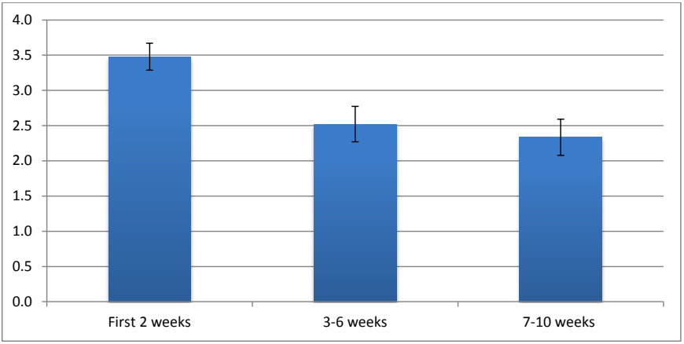
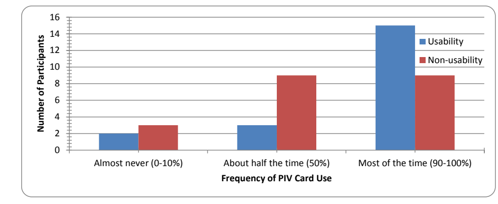

NIST IR 7867 E2012 日本語訳
英語タイトル : Usability of PIV Smartcards for Logical Access日本語タイトル : 論理アクセスにおける PIV スマートカードのユーザビリティ
公開日 : 2012-08-01
原文URL : https://csrc.nist.gov/pubs/ir/7867/e2012/final
翻訳編集 : 自動生成（有志による非公式の日本語訳）, 原文取得日 : 2026-10-31, 訳文 : 473 / 475 ブロック
[要約] NIST IR 7867 E2012 は、HSPD-12 が義務付けるスマートカードのユーザビリティの側面と、スマートカードに関するユーザーの認識と行動を調べたユーザビリティ調査の結果を示す報告書です。調査は、OCIO の部署が実施した PIV の技術パイロットに参加していた NIST 職員のうち 24 人を対象に、2010 年の夏に 10 週間にわたり、コンピューターへのログイン/ログアウト、メッセージの暗号化とデジタル署名、特定のアプリケーションへの認証に PIV カードを用いた経験を、ダイアリー、アンケート、インタビュー、現場観察などで収集したものです。ユーザーが説明した問題には、スマートカードをリーダーに差したまま忘れること、認証にスマートカードを使うのを忘れること、デジタル署名と暗号化の理解が難しいことが含まれます。最も大きな利点として認識されたのは複雑なパスワードの代わりに覚えやすい PIN を使えることで、最も大きな欠点として認識されたのはスマートカードに対応したアプリケーションが少ないことでした。
NISTIR 7867 rev. 2012
NISTIR 7867 rev. 2012
Usability of PIV Smartcards for Logical Access
論理アクセスにおける PIV スマートカードのユーザビリティ
Emile Morse
Mary Theofanos
Yee-Yin Choong
Celeste Paul
Aiping Zhang
Hannah Wald
Emile Morse
Mary Theofanos
Yee-Yin Choong
Celeste Paul
Aiping Zhang
Hannah Wald
http://dx.doi.org/10.6028/NIST.IR.7867
http://dx.doi.org/10.6028/NIST.IR.7867
［NIST のロゴ。公的な標章のため、この非公式サイトには掲載していません。原本 PDF を参照してください。］
NISTIR 7867 rev. 2012
NISTIR 7867 rev. 2012
Usability of PIV Smartcards for Logical Access
論理アクセスにおける PIV スマートカードのユーザビリティ
Emile Morse
Mary Theofanos
Yee-Yin Choong
Celeste Paul
Aiping Zhang
Emile Morse
Mary Theofanos
Yee-Yin Choong
Celeste Paul
Aiping Zhang
Information Access Division
Information Technology Laboratory
情報アクセス部門
情報技術研究所
Hannah Wald
Booz Allen Hamilton
McLean, VA
Hannah Wald
Booz Allen Hamilton
McLean, VA
http://dx.doi.org/10.6028/NIST.IR.7867
http://dx.doi.org/10.6028/NIST.IR.7867
August 2012
2012年8月
U.S. Department of Commerce
Rebecca Blank, Acting Secretary
米国商務省
Rebecca Blank 長官代行
National Institute of Standards and Technology
Patrick D. Gallagher, Under Secretary of Commerce for Standards and Technology and Director
米国国立標準技術研究所
Patrick D. Gallagher、商務次官（標準・技術担当）兼所長
TABLE OF CONTENTS
目次
List of Tables and Figures
表と図の一覧
NOTES
注記
This manuscript is being revised to correct an error in the original regarding the specific certificates on the PIV card. The corrections are in two paragraphs of Section 4.2.5 (“Certificates”). This version supersedes the version published in June 2012.
本稿は、PIV カード上の特定の証明書に関する原版の誤りを訂正するために改訂されています。訂正は、4.2.5 節（「証明書」）の二つの段落にあります。この版は、2012 年 6 月に発行された版に取って代わります。
EXECUTIVE SUMMARY
エグゼクティブサマリー
Homeland Security Presidential Directive 12 (HSPD-12) requires all Federal agencies to standardize and enhance the security of their facilities and information resources by adopting a secure multi-factor authentication (MFA) system [16]. This system employs personal identity verification (PIV) cards (a type of smartcard) and personal identification numbers (PINs). The cards are to be used for federal employee, associate, and contractor identification; physical access to federal facilities; and logical access to federal information systems. Specifications for the PIV cards and associated organizational systems are described in FIPS-201 [10]. Such PIV cards have already been widely deployed across Federal agencies (to 89 % of the Federal workforce as of the end of 2011 [12]), including the National Institute of Standards and Technology (NIST).
国土安全保障大統領指令 12（HSPD-12）は、すべての連邦機関に対し、安全な多要素認証（MFA）システムを採用することで、施設と情報資源のセキュリティを標準化し強化することを求めています [16]。このシステムは、個人識別検証（PIV）カード（スマートカードの一種）と個人識別番号（PIN）を使用します。このカードは、連邦職員、関係者、請負業者の識別、連邦施設への物理アクセス、および連邦情報システムへの論理アクセスに使用されることになっています。PIV カードと関連する組織のシステムの仕様は、FIPS-201 [10] に記載されています。こうした PIV カードは、すでに NIST を含む連邦機関全体に広く展開されています（2011 年末時点で連邦職員の 89 % [12]）。
This report presents the findings of a usability study by NIST’s Visualization and Usability Group that examines the usability aspects of smartcards mandated by HSPD-12, as well as users’ perceptions and behavior regarding smartcards. We were interested in how users would use smartcards in their everyday work processes; how their work processes might change to accommodate smartcard use; and finally, the benefits and drawbacks they perceive in using smartcards for authentication.
本報告書は、NIST の Visualization and Usability Group による、HSPD-12 が義務付けるスマートカードのユーザビリティの側面と、スマートカードに関するユーザーの認識と行動を調べたユーザビリティ調査の結果を示します。私たちが関心を持ったのは、ユーザーが日常の作業プロセスでスマートカードをどのように使うか、スマートカードの使用に対応するために作業プロセスがどのように変わりうるか、そして最後に、認証にスマートカードを使うことについて、ユーザーが認識する利点と欠点です。
We recruited 24 participants from a group of 100 NIST employees who were participating in a PIV technical pilot conducted by the office of the OCIO. For 10 weeks during the summer of 2010, we collected information on their experiences with using PIV cards on a daily basis for logging into/out of computers; encrypting and digitally signing messages; and authenticating to certain applications. Our study employed ethnographic methods including diaries, surveys, interviews, and field observations.
私たちは、OCIO の部署が実施した PIV の技術パイロットに参加していた 100 人の NIST 職員のグループから、24 人の参加者を募集しました。2010 年の夏に 10 週間にわたり、コンピューターへのログイン/ログアウト、メッセージの暗号化とデジタル署名、特定のアプリケーションへの認証のために PIV カードを日常的に使用した経験についての情報を収集しました。この調査では、ダイアリー、アンケート、インタビュー、現場観察などのエスノグラフィー的手法を用いました。
Users described to us the issues they experienced while they integrated PIV cards into their work processes, including forgetting smartcards in readers, forgetting to use smartcards to authenticate, and difficulty understanding digital signatures and encryption. The greatest perceived benefit was the use of an easy-to-remember PIN instead of complicated passwords. The greatest perceived drawback was the lack of smartcard-supported applications. Most participants had a positive experience using smartcards. Their perceptions were influenced by personal benefits experienced rather than an increase in security.
ユーザーは、PIV カードを自分の作業プロセスに組み込む際に経験した問題を私たちに説明してくれました。それには、スマートカードをリーダーに差したまま忘れること、認証にスマートカードを使うのを忘れること、デジタル署名と暗号化の理解が難しいことが含まれます。最も大きな利点として認識されたのは、複雑なパスワードの代わりに覚えやすい PIN を使えることでした。最も大きな欠点として認識されたのは、スマートカードに対応したアプリケーションが少ないことでした。ほとんどの参加者は、スマートカードの使用について肯定的な体験をしました。その認識は、セキュリティの向上ではなく、体験した個人的な利点に影響されていました。
Our study findings provided us with some insights into how organizations can reduce the drawbacks and maximize the benefits of smartcards for their user population. In general, security must be as transparent as possible and maximize direct benefits to users. In order to both increase the effectiveness of security measures and make them more usable, security should be considered a feature of a well-designed system that maximizes benefits to users.
調査結果から、組織がスマートカードの欠点を減らし、ユーザー集団にとっての利点を最大化する方法について、いくつかの示唆が得られました。一般に、セキュリティは可能な限り透過的でなければならず、ユーザーへの直接的な利点を最大化しなければなりません。セキュリティ対策の有効性を高め、かつ使いやすくするために、セキュリティは、ユーザーにとっての利点を最大化する、よく設計されたシステムの機能として考えるべきです。
1. INTRODUCTION
1. 序論
Homeland Security Presidential Directive 12 (HSPD-12) defines requirements for a standardized, U.S. Government-wide identification mechanism for a reliable identification credential to be used for gaining authorized access to federal facilities and federal information systems. Personal Identity Verification (PIV) [16] is a smartcard-based multi-factor authentication (MFA) mechanism designed to increase security of government resources. The PIV smartcard contains information to identify and authenticate the cardholder, such as his full name and agency; public key infrastructure (PKI) certificates for authentication, encryption, and digital signatures; and biometrics such as fingerprints and a photo in the form of minutia templates.1 It can be used for physical building access, for information system authentication, to support PKI, and as an identity card. Smartcard-based authentication is recognized as being one of the most secure authentication mechanisms currently available [3].2
国土安全保障大統領指令 12（HSPD-12）は、連邦施設と連邦情報システムへの認可されたアクセスを得るために使用される、信頼できる身分証明用クレデンシャルのための、標準化された米国政府全体の識別メカニズムの要件を定めています。個人識別検証（PIV）[16] は、政府資源のセキュリティを高めるよう設計された、スマートカードに基づく多要素認証（MFA）メカニズムです。PIV スマートカードには、カード保持者の氏名や所属機関などの、カード保持者を識別し認証するための情報、認証、暗号化、デジタル署名のための公開鍵基盤（PKI）証明書、および指紋や、特徴点テンプレートの形式の写真などの生体情報が含まれます。1 PIV スマートカードは、建物への物理アクセス、情報システムの認証、PKI のサポート、および身分証明書として使用できます。スマートカードによる認証は、現在利用可能な最も安全な認証メカニズムの一つとして認められています [3]。2
To realize the full benefits – security and otherwise – of smartcard-based PIV systems, those systems must be designed with usability in mind. To that end, the purpose of this pilot study was to understand the factors that affect user behavior and perceptions in the use of smartcards for authentication and to examine factors that affect user behavior and perceptions of security in general. We addressed three specific questions:
スマートカードに基づく PIV システムの利点（セキュリティ面およびそれ以外）を最大限に実現するには、そのシステムをユーザビリティを念頭に置いて設計しなければなりません。そのために、このパイロット調査の目的は、認証にスマートカードを使う際のユーザーの行動と認識に影響を与える要因を理解し、さらに一般にセキュリティに対するユーザーの行動と認識に影響を与える要因を調べることでした。私たちは、三つの具体的な問いに取り組みました。
1.How will users use the smartcards in their everyday work processes?
1.ユーザーは、日常の作業プロセスでスマートカードをどのように使いますか。
2.How might users’ work processes change to accommodate smartcard use?
2.スマートカードの使用に対応するために、ユーザーの作業プロセスはどのように変わりうるでしょうか。
3.What benefits and drawbacks do users see in using smartcards for authentication?
3.ユーザーは、認証にスマートカードを使うことに、どのような利点と欠点を見出しますか。
We conducted our study at NIST in the summer of 2010 in conjunction and concurrently with a smartcard operational pilot conducted by the Office of the CIO (OCIO). The purpose of the OCIO pilot was to make progress on NIST’s goals of achieving compliance with HSPD-12; in particular, it was designed to evaluate the feasibility of using smartcards in combination with Personal Identification Numbers (PINs) to control access to computing resources. The purpose of this report is to summarize the observations of the usability research team, who followed a group of 24 users of PIV cards over a 10-week period. In this report, we present our findings, issues encountered by users, and recommendations for their remediation.
私たちは、2010 年の夏に NIST で、最高情報責任者室（OCIO）が実施したスマートカードの運用パイロットと並行してこの調査を実施しました。OCIO のパイロットの目的は、HSPD-12 への準拠を達成するという NIST の目標を前進させることでした。特に、コンピューティング資源へのアクセスを制御するために、スマートカードを個人識別番号（PIN）と組み合わせて使う実現可能性を評価するよう設計されていました。本報告書の目的は、10 週間にわたって 24 人の PIV カードのユーザーを追跡した、ユーザビリティ研究チームの観察結果をまとめることです。本報告書では、私たちの調査結果、ユーザーが遭遇した問題、およびそれらを是正するための推奨事項を示します。
The scope of the usability study was limited to tasks available with the NIST PIV card implementation, such as logging into/out of and locking/unlocking a computer; encrypting/decrypting and digitally signing e-mails or documents; and authenticating to several PIV-enabled web applications. In the case of the web applications, all participants who were permanent NIST employees (not contractors) were able to authenticate to an application to register visitors to the NIST campus: the other available applications depended upon the participants’ job roles (see Section 3.1).
このユーザビリティ調査の範囲は、NIST の PIV カードの実装で利用できるタスクに限定されていました。それは、コンピューターへのログイン/ログアウトとロック/ロック解除、電子メールや文書の暗号化/復号とデジタル署名、および PIV に対応したいくつかのウェブアプリケーションへの認証などです。ウェブアプリケーションについては、（請負業者ではなく）NIST の正規職員である参加者は全員、NIST のキャンパスへの訪問者を登録するアプリケーションに認証できました。利用できるその他のアプリケーションは、参加者の職務上の役割に依存しました（3.1 節を参照）。
The PIV smartcard affects millions of U.S. Government employees and contractors, and its use is mandated by policy. As usability specialists, we are concerned how this additional authentication factor will impact the perceptions, behaviors, and work processes of so many users. The PIV smartcards are meant to be used throughout the day as often as passwords would be used. This makes smartcard use very different from other types of card scenarios users may have experience with, such as weekly use of an Automatic Teller Machine (ATM) card. This is one of several reasons why we studied user behavior and perceptions using smartcards. Although PIV systems have the potential to be more secure than usernames and passwords, that potential can only be realized if the system is accessible and appealing to its user population.
PIV スマートカードは、数百万人の米国政府職員と請負業者に影響を与えており、その使用は方針で義務付けられています。ユーザビリティの専門家として、私たちは、この追加の認証要素が、これほど多くのユーザーの認識、行動、作業プロセスにどのような影響を与えるかを懸念しています。PIV スマートカードは、パスワードを使うのと同じ頻度で、一日を通して使うことを想定しています。このため、スマートカードの使用は、現金自動預け払い機（ATM）のカードを週に一度使うなど、ユーザーが経験しているかもしれない他の種類のカードの場面とは大きく異なります。これが、スマートカードを使うユーザーの行動と認識を調べた理由の一つです。PIV システムは、ユーザー名とパスワードより安全になる可能性がありますが、その可能性が実現されるのは、システムが利用者集団にとって利用しやすく魅力的である場合に限られます。
2. PREVIOUS PIV STUDIES
2. 過去の PIV 研究
A number of smartcard authentication systems similar to the PIV infrastructure in place at NIST are already in use elsewhere. One example is the European national electronic identity (e-ID) card [1] that stores different types of cardholder credentials depending on the requirements of the issuing country. Another is the Biometric Logical Access Development and Execution (PKI/BLADE) card used by the U.S. Department of State as an employee identity card and authentication token [4][17]. Also, the U.S. Department of Defense uses the Common Access Card as a military identity card, Geneva Conventions Identification Card, and authentication token [4].
NIST に導入された PIV インフラストラクチャに似た、多数のスマートカード認証システムが、すでに他の場所で使用されています。一例は、欧州の国民電子 ID（e-ID）カード [1] で、発行国の要件に応じて、さまざまな種類のカード保持者のクレデンシャルを格納します。もう一つは、米国国務省が職員の身分証明書および認証トークンとして使用している Biometric Logical Access Development and Execution（PKI/BLADE）カードです [4][17]。また、米国国防総省は、Common Access Card を、軍の身分証明書、ジュネーヴ条約身分証明書、および認証トークンとして使用しています [4]。
While work has focused on smartcard security weaknesses such as problems with the embedded chip and PIN mechanism [9] and PIV implementation standard [5][6], very little work has looked at smartcard usability [14]. Proctor et al. [13] compared multiple authentication methods through formal task analysis. They warn that the physical manipulation of a smartcard in the authentication process can add complexity to the authentication task and reduce ease of use compared to other authentication methods.
研究は、内蔵チップや PIN の仕組みの問題 [9] や、PIV の実装標準 [5][6] といったスマートカードのセキュリティ上の弱点に集中してきましたが、スマートカードのユーザビリティを調べた研究はごくわずかです [14]。Proctor らの研究 [13] は、正式なタスク分析を通じて複数の認証方式を比較しました。彼らは、認証プロセスにおけるスマートカードの物理的な操作が、認証タスクを複雑にし、他の認証方式と比べて使いやすさを低下させる可能性があると警告しています。
Braz and Robert [3] conducted a comparative analysis of different authentication methods. They compared methods such as passwords, smartcards, fingerprints, and keystroke patterns on qualities such as benefits, drawbacks, security, and usability. Overall, they found that the smartcard rated as one of the most secure and usable methods for authentication.
Braz と Robert の研究 [3] は、異なる認証方式の比較分析を行いました。彼らは、パスワード、スマートカード、指紋、キーストロークのパターンなどの方式を、利点、欠点、セキュリティ、ユーザビリティといった特性について比較しました。全体として、スマートカードは、認証で最も安全かつ使いやすい方式の一つと評価されたことがわかりました。
Baldwin and Malone [2] described the use of smartcards in a health management system. The ability to store medical history and insurance information increased the usefulness of smartcards for authentication beyond being a token. Patients identified themselves by presenting the smartcard and providing a PIN. Visits for care and therapy were recorded on the smartcard, creating a case history. Patients paid for services and filed claims using the smartcard. The smartcard provided an easy way to identify patients and help the patients manage their health care accounts.
Baldwin と Malone の研究 [2] は、医療管理システムでのスマートカードの使用を説明しました。病歴や保険情報を保存できることで、スマートカードの認証における有用性は、単なるトークンを超えて高まりました。患者は、スマートカードを提示し、PIN を入力して自分を識別しました。診察や治療の記録はスマートカードに記録され、診療記録が作成されました。患者は、スマートカードを使ってサービスの支払いや請求の申請を行いました。スマートカードは、患者を識別し、患者が医療アカウントを管理するための簡単な方法を提供しました。
The U.S. Department of State analyzed the impact of the PKI/BLADE smartcard with biometric on their user base [17]. Their smartcard system allowed users to replace multiple username/password authentication credentials with a single smartcard/PIN credential. They analyzed their technical support logs to understand how the smartcard system affected user support requests [18]. Before smartcard deployment, password reset support requests averaged 25.8 % of all technical support requests per year. After smartcard deployment, password reset support requests dropped to an average of 10.6 % of all technical support requests per year.
米国国務省は、生体情報付きの PKI/BLADE スマートカードが利用者層に与える影響を分析しました [17]。同省のスマートカードシステムでは、ユーザーは、複数のユーザー名/パスワードの認証クレデンシャルを、単一のスマートカード/PIN のクレデンシャルに置き換えることができました。同省は、スマートカードシステムがユーザーサポート要求にどう影響したかを理解するために、技術サポートのログを分析しました [18]。スマートカードの展開前は、パスワードリセットのサポート要求が、年間の全技術サポート要求の平均 25.8 % を占めていました。スマートカードの展開後は、パスワードリセットのサポート要求は、年間の全技術サポート要求の平均 10.6 % に減少しました。
Strouble et al. [15] conducted a survey that looked at issues concerning security, usability, and productivity effects of smartcards. They found the use of a PIN and PKI credential for MFA instead of a password improved the security of the authentication mechanism, but did not necessarily increase usability of the smartcard system. Sixty-seven percent of the participants forgot their smartcard in a smartcard reader at least once, resulting in potential security risks. Six percent of those participants had their smartcard lost or stolen, resulting in security risks, replacement costs, and productivity loss.
Strouble らの研究 [15] は、スマートカードのセキュリティ、ユーザビリティ、生産性への影響に関する問題を調べるアンケート調査を行いました。彼らは、パスワードの代わりに PIN と PKI クレデンシャルを MFA に使うことで、認証メカニズムのセキュリティは向上しましたが、スマートカードシステムのユーザビリティは必ずしも向上しなかったことを見出しました。参加者の 67 % は、少なくとも一度はスマートカードをスマートカードリーダーに差したまま忘れ、セキュリティリスクの可能性を生じさせました。それらの参加者の 6 % は、スマートカードを紛失または盗難に遭い、セキュリティリスク、交換費用、生産性の損失を生じさせました。
3. METHOD
3. 方法
3.1 PARTICIPANTS
3.1 参加者
Within the study population, there were 10 males and 14 females, with an average age of 47 (SEM ± 2). The distribution of education among the participants was representative of the organization (8 high school degrees; 10 college degrees; 6 post-graduate degrees). Ten participants were engaged in technical work (three of these were contractors); six were support staff (e.g. secretarial work); and eight worked in an administrative specialty (e.g. finance).3 Individuals in different job groupings not only had different sets of duties, but also had access to different applications (including applications that supported PIV authentication). Two participants reported having experience with smartcards before the study. The median time of participants’ service at NIST was 13 years: the median time in their current positions was 4.5 years.
調査対象の集団には、男性 10 人と女性 14 人がおり、平均年齢は 47 歳（SEM ± 2）でした。参加者の学歴の分布は、組織を代表するものでした（高校卒 8 人、大学卒 10 人、大学院修了 6 人）。10 人の参加者は技術的な業務に従事し（うち 3 人は請負業者）、6 人は支援スタッフ（たとえば秘書業務）、8 人は管理部門の専門職（たとえば財務）に従事していました。3 職種のグループが異なる個人は、職務の内容が異なるだけでなく、利用できるアプリケーション（PIV 認証に対応したアプリケーションを含む）も異なっていました。2 人の参加者は、調査前にスマートカードの使用経験があると報告しました。参加者の NIST での勤続年数の中央値は 13 年で、現在の職位での年数の中央値は 4.5 年でした。
The NIST OCIO pilot (with which the usability pilot was associated) was a small-scale field test of NIST’s PIV infrastructure, and was designed to accomplish the following prior to the planned organization-wide implementation of the system:
NIST OCIO のパイロット（ユーザビリティ・パイロットが関連付けられていたもの）は、NIST の PIV インフラストラクチャの小規模な実地試験であり、システムの組織全体への実装が計画される前に、次のことを達成するよう設計されていました。
•Discover and address technical and procedural problems with the PIV infrastructure and associated support mechanisms;
•PIV インフラストラクチャと関連するサポートの仕組みにおける、技術的および手続き上の問題を発見し、対処します。
•Catalog common smartcard-related issues likely to be encountered by end users;
•エンドユーザーが遭遇しそうな、スマートカード関連の一般的な問題を一覧にします。
•Provide hands-on training for staff responsible for maintaining the PIV infrastructure and providing technical support; and
•PIV インフラストラクチャの保守と技術サポートの提供を担当するスタッフに、実地のトレーニングを提供します。
•Estimate the impact of organization-wide PIV rollout on password management and technical support workload.
•組織全体での PIV の展開が、パスワード管理と技術サポートの作業負荷に与える影響を見積もります。
The OCIO research team recruited 100 participants for the OCIO pilot study, which would provide a sufficiently large sample population while keeping the number of users engaged in the pilot study down to a manageable size. The team recruited participants by sending out an e-mail request on the mailing lists of a few organizational units (OUs) that had close working relationships with the OCIO.4 Recruitment in the technology pilot was designed to include test users from a representative sample of users in the institution. Because the pilot was focused on evaluating the PIV system and its support staff rather than the user population itself, the OCIO research team did not record participants’ demographic information (e.g., age, sex, education level, years at NIST).
OCIO の研究チームは、OCIO のパイロット調査に 100 人の参加者を募集しました。これにより、十分に大きな標本集団を確保しつつ、パイロット調査に関与するユーザーの数を管理可能な規模に抑えられます。チームは、OCIO と密接な業務関係にあるいくつかの組織単位（OU）のメーリングリストに、電子メールで依頼を送ることで参加者を募集しました。4 技術パイロットの募集は、機関のユーザーの代表的な標本から、試験ユーザーを含めるよう設計されました。パイロットは、ユーザー集団そのものではなく、PIV システムとそのサポートスタッフの評価に重点を置いていたため、OCIO の研究チームは、参加者の属性情報（たとえば、年齢、性別、学歴、NIST での勤続年数）を記録しませんでした。
We recruited our 24 study participants by sending an e-mail requests to the participants in the larger pilot study, requesting volunteers. We used the same smartcard system as the OCIO pilot; the only difference was that our study included additional research methodologies to assess the smartcard system, and that it was user-focused rather than system-focused. Participation in both the OCIO pilot and our study was voluntary. However, all participants were aware that the smartcard system would soon be mandatory for most users within NIST.
私たちは、より大規模なパイロット調査の参加者に電子メールで依頼を送り、志願者を募ることで、24 人の調査参加者を募集しました。OCIO のパイロットと同じスマートカードシステムを使用しました。唯一の違いは、私たちの調査にはスマートカードシステムを評価するための追加の調査方法が含まれており、システム中心ではなくユーザー中心だったことです。OCIO のパイロットと私たちの調査の両方への参加は任意でした。ただし、すべての参加者は、スマートカードシステムが間もなく NIST 内のほとんどのユーザーに義務付けられることを認識していました。
3.2 INSTRUCTIONAL MATERIALS
3.2 説明資料
Participants were e-mailed a document titled “PIV Pilot Test Scenarios User Guide” before their card readers were installed. The technicians who installed smartcard readers for participants also provided them with a paper copy. The document contains step-by-step instructions on how to perform various smartcard-related functions, such as logging into/out of a computer, digitally signing e-mail, and authenticating to certain web applications (as well as how to perform these functions without smartcards). It also describes common errors encountered when using a smartcard. The document also provides guidance on how to report unexpected smartcard-related problems or issues.
参加者には、カードリーダーが設置される前に、「PIV Pilot Test Scenarios User Guide」という文書が電子メールで送られました。参加者向けにスマートカードリーダーを設置した技術者も、紙のコピーを渡しました。この文書には、コンピューターへのログイン/ログアウト、電子メールへのデジタル署名、特定のウェブアプリケーションへの認証など、スマートカードに関連するさまざまな機能の実行方法が（スマートカードを使わずにこれらの機能を実行する方法も含めて）、手順ごとに書かれています。また、スマートカードの使用時によく遭遇するエラーについても説明しています。さらに、予期しないスマートカード関連の問題や課題を報告する方法についてのガイダンスも提供しています。
3.3 EQUIPMENT
3.3 機器
Participants were given access to a fully functional PIV smartcard authentication system. Although we recruited from a “technology pilot,” it was the system intended for institute-wide implementation. The equipment used in the usability study was also used in the OCIO pilot.
参加者は、完全に機能する PIV スマートカード認証システムを利用できました。私たちは「技術パイロット」から参加者を募集しましたが、これは研究所全体での実装を意図したシステムでした。ユーザビリティ調査で使用した機器は、OCIO のパイロットでも使用されました。
3.3.1 Card
3.3.1 カード
The card used by participants in the OCIO and usability pilots was designed to meet HSPD-12 requirements for granting physical access to NIST facilities and logical access to the agency’s systems [16]. The GSA Managed Service Office (MSO) issued these cards to all NIST employees, contractors, and associates starting in 2008, at which time they could be used for physical access only. The cards were issued along with PINs in anticipation of their being used for logical access. The smartcard PINs were 6 to 8 numbers long and selected by participants at the time of smartcard activation. However, because the smartcards were issued roughly two years in advance of the OCIO pilot, many participants never used their original PINs and forgot them, necessitating that the PINs be changed before the study began. In addition, an identifier field in the card was not compatible with NIST’s PIV infrastructure – it consisted of a number instead of a unique login name – so study participants had to have their card re-initialized.5
OCIO とユーザビリティのパイロットで参加者が使用したカードは、NIST の施設への物理アクセスと、同機関のシステムへの論理アクセスを許可するための HSPD-12 の要件を満たすよう設計されていました [16]。GSA Managed Service Office（MSO）は、2008 年からすべての NIST 職員、請負業者、関係者にこれらのカードを発行しており、その時点では物理アクセスにのみ使用できました。カードは、論理アクセスに使われることを見越して、PIN とともに発行されました。スマートカードの PIN は 6 桁から 8 桁の数字で、スマートカードの有効化時に参加者が選びました。しかし、スマートカードは OCIO のパイロットのおよそ 2 年前に発行されていたため、多くの参加者は元の PIN を一度も使わず、忘れてしまっており、調査の開始前に PIN を変更する必要がありました。さらに、カード内の識別子フィールドが、NIST の PIV インフラストラクチャと互換性がありませんでした。一意なログイン名ではなく、数字で構成されていたためです。そのため、調査参加者はカードを再初期化してもらわなければなりませんでした。5
Participants also retained their usernames/passwords for authentication. The password length policy was 10 characters at the beginning of the study and changed to 12 characters one week after the study began. Passwords expired every 90 days and every participant changed passwords at least once during the study.
参加者は、認証用のユーザー名/パスワードも引き続き保持していました。パスワードの長さの方針は、調査開始時は 10 文字で、調査開始の 1 週間後に 12 文字に変更されました。パスワードは 90 日ごとに有効期限が切れ、すべての参加者が調査中に少なくとも一度はパスワードを変更しました。
As specified in NIST SP 800-104 [11], the smartcard included the following topographical features (shown in Figure 1) to support visual identification and authentication:6
NIST SP 800-104 [11] で規定されているとおり、スマートカードには、目視による識別と認証を支援するための次の外観上の特徴（図 1 に示します）が含まれていました。6
•Employee photograph
•職員の写真
•Employee name
•職員の氏名
•Employee affiliation identifier
•職員の所属識別子
•Expiration date
•有効期限
•Agency card serial number (back)
•機関のカードシリアル番号（裏面）
•Issuer identification (Back)
•発行者の識別（裏面）

PIV カードの表面の見本に名称を付けた図です。カードには写真の代わりの灰色の人影、上部の「JAN 2011」、「CARDHOLDER Government Dept.」「AGENCY Agency」「EXPIRES 2010/JAN1」の欄、氏名「Jordan, Doe, C.」、バーコード、金色の接触チップがあります。矢印がそれぞれ「Cardholder Photograph」（カード所有者の写真）、「Affiliation Identifier」（所属の識別子）、「Expiration Date」（有効期限）、「Cardholder Name」（カード所有者の氏名）、「Integrated Circuit Chip (ICC)」（IC チップ）のラベルを指しています。
Figure 1: Schematic depicting the basic layout and required components of a federal PIV card
図 1: 連邦 PIV カードの基本レイアウトと必須コンポーネントを示す模式図
Each smartcard has an integrated circuit chip (ICC) containing logical credentials such as the Cardholder Unique Identifier (CHUID).These credentials can be read electronically from the card and/or used for authentication. The ICC contains biometric information consisting of a digital image of the cardholder’s face (the same as the photo displayed on the front of the card) and both of the cardholder’s index fingerprints in the form of a minutia template. It also contains up to four digital PKI certificates: one certifies the validity of the card itself, while the other three are used by the cardholder for authentication (i.e., logical access), encryption, and digital signatures respectively (the last two certificates are optional).
各スマートカードには、カード保持者固有識別子（CHUID）などの論理クレデンシャルを含む集積回路チップ（ICC）があります。これらのクレデンシャルは、カードから電子的に読み取ったり、認証に使用したりできます。ICC には、カード保持者の顔のデジタル画像（カードの表面に表示された写真と同じもの）と、カード保持者の左右の人差し指の指紋を特徴点テンプレートの形式にした生体情報が含まれています。また、最大四つのデジタル PKI 証明書も含まれています。一つはカード自体の有効性を証明し、残りの三つは、カード保持者が、それぞれ認証（すなわち論理アクセス）、暗号化、デジタル署名に使用します（後の二つの証明書は任意です）。
Like employees’ preexisting identification cards, smartcards could be used as physical access tokens. Participants could also use the card (in combination with their PIN and on-card PKI credentials) to log into, log out of, lock, or unlock their workstations. In addition, the card allowed them to use PKI certificates to encrypt and digitally sign e-mail.7 Finally, they could use the smartcard to authenticate to certain web applications (such as one for registering visitors to the NIST campus).
職員がすでに持っていた身分証明書と同様に、スマートカードは物理アクセスのトークンとして使用できました。参加者は、（PIN およびカード上の PKI クレデンシャルと組み合わせて）カードを使い、ワークステーションへのログイン、ログアウト、ロック、ロック解除を行うこともできました。さらに、カードによって、PKI 証明書を使った電子メールの暗号化とデジタル署名もできました。7 最後に、スマートカードを使って、特定のウェブアプリケーション（NIST のキャンパスへの訪問者を登録するアプリケーションなど）への認証もできました。
3.3.2 Card Readers
3.3.2 カードリーダー
The OCIO initially planned to issue USB smartcard readers to each participant in its logical access pilot. However, some participants had keyboards or laptops with built-in smartcard readers and used those instead, although all participants had to have ActivClient smartcard middleware8 installed on their workstations regardless of which reader they used (see Section 3.4 below). Of the 24 participants, 13 used the USB readers provided by the OCIO; 5 used integrated keyboard readers; and 6 used internal laptop readers (see Figure 2 below).
OCIO は当初、論理アクセスのパイロットの各参加者に USB スマートカードリーダーを支給する計画でした。しかし、一部の参加者は、スマートカードリーダーが内蔵されたキーボードやノートパソコンを持っており、代わりにそれらを使用しました。ただし、どのリーダーを使うかにかかわらず、すべての参加者は、自分のワークステーションに ActivClient スマートカードミドルウェア8 をインストールしなければなりませんでした（下の3.4 節を参照）。24 人の参加者のうち、13 人は OCIO が提供した USB リーダーを使い、5 人は統合型のキーボードリーダーを使い、6 人はノートパソコン内蔵のリーダーを使いました（下の図 2 を参照）。
［人物の写真。人物が写っているため、この非公式サイトには掲載していません。原本 PDF を参照してください。］
Figure 2: From left to right, a USB smartcard reader, a keyboard reader, and a laptop reader
図 2: 左から順に、USB スマートカードリーダー、キーボードリーダー、ノートパソコンのリーダー
At the outset of the study, all workstations to which these readers were attached ran Windows XP with the aforementioned smartcard middleware. By the end, some of the participants had switched to using Windows 7, which has built-in smartcard functionality.
調査の開始時には、これらのリーダーを接続したすべてのワークステーションが、前述のスマートカードミドルウェアを備えた Windows XP を実行していました。終了時には、一部の参加者が、スマートカード機能を内蔵する Windows 7 に切り替えていました。
3.4 SETTING
3.4 環境
Participants used their own computers (either laptops or desktops) and workspaces. Those with laptop computers docked the laptops at their workspaces and used external monitors, keyboards, and mice. Several participants with laptops occasionally worked from home, and several participants without laptops occasionally worked from home using their personal computers.
参加者は、自分のコンピューター（ノートパソコンまたはデスクトップ）と作業スペースを使用しました。ノートパソコンを持つ参加者は、作業スペースでノートパソコンをドッキングし、外付けのモニター、キーボード、マウスを使いました。ノートパソコンを持つ数人の参加者は、時々自宅で作業しており、ノートパソコンを持たない数人の参加者は、時々自宅で個人のコンピューターを使って作業していました。
3.5 TASKS
3.5 タスク
Participant tasks were limited to those supported by the smartcard implementation. Supported tasks included using the smartcard to login/logout and to lock/unlock a computer, encrypt/decrypt and digitally sign an e-mail or document, and authenticate to several smartcard-enabled web applications. In each case, participants could authenticate with either their PIV cards and PINs or their usernames and passwords.
参加者のタスクは、スマートカードの実装がサポートするものに限定されました。サポートされたタスクには、スマートカードを使ったコンピューターのログイン/ログアウトとロック/ロック解除、電子メールや文書の暗号化/復号とデジタル署名、およびスマートカードに対応したいくつかのウェブアプリケーションへの認証が含まれます。いずれの場合も、参加者は、PIV カードと PIN、またはユーザー名とパスワードのどちらでも認証できました。
3.6 TIMELINE OF ACTIVITIES
3.6 活動のタイムライン
We followed our study participants over a period of approximately 10 weeks, employing a variety of ethnographic research methods to obtain a breadth of coverage as well as a depth of understanding of our participants. We conducted our study in three phases: Smartcard Installation, Smartcard Use, and Study Wrap-Up. See Table 1 for a summary of research activities according to the study timeline.
私たちは、調査参加者を約 10 週間にわたって追跡し、さまざまなエスノグラフィー的調査手法を用いて、参加者に関する網羅的な範囲と深い理解の両方を得ました。調査は、スマートカード導入、スマートカード使用、調査総括の三つのフェーズで実施しました。調査のタイムラインに沿った研究活動の概要を、表 1 に示します。
Table 1: Summary of study timeline and activities
表 1: 調査のタイムラインと活動の概要
| Smartcard Installation | Smartcard Use | Study Wrap-Up | |||
|---|---|---|---|---|---|
| Pre-Install | Post-Install | Daily | 2-Week | 6-Week | Exit |
| Survey | Site Visit Interview Survey | Daily Diary Daily e-mail Survey | Site Visit Interview Survey | Site Visit Interview Survey | Site Visit Interview Survey |
| スマートカード導入 | スマートカード使用 | 調査総括 | |||
|---|---|---|---|---|---|
| 導入前 | 導入後 | 日次 | 2 週間 | 6 週間 | 終了時 |
| アンケート | 現地訪問 インタビュー アンケート | 日次ダイアリー 日次メール アンケート | 現地訪問 インタビュー アンケート | 現地訪問 インタビュー アンケート | 現地訪問 インタビュー アンケート |
3.6.1 Smartcard Installation Phase
3.6.1 スマートカード導入フェーズ
Before we met with participants, we sent them a Pre-Install survey, which they were asked to complete before the first site visit. The OCIO research team provided the participants with a brief training document via e-mail (See Section 3.2).
参加者と会う前に、導入前アンケートを送り、最初の現地訪問の前に回答するよう依頼しました。OCIO の研究チームは、参加者に簡単なトレーニング文書を電子メールで提供しました（3.2 節を参照）。
The technical support person then installed the smartcard hardware and software9 and verbally guided participants through certain smartcard-related tasks, such as locking and unlocking their computers. After installation was complete, we conducted the Post-Install site visit (within 2 working days of installation, and usually sooner). We observed participants using their smartcards to log into/out of or lock/unlock their computers, interviewed them about their first-time experiences with the smartcards, administered the Post-Install surveys, and provided them the Daily Diaries.
その後、技術サポート担当者が、スマートカードのハードウェアとソフトウェアを導入し 9、コンピューターのロックやロック解除など、スマートカード関連の作業を参加者に口頭で案内しました。導入が完了した後、導入後の現地訪問を（導入から 2 営業日以内、通常はそれより早く）実施しました。参加者がスマートカードを使ってコンピューターにログイン/ログアウトしたり、ロック/ロック解除したりする様子を観察し、スマートカードを使い始めた当初の体験についてインタビューし、導入後アンケートを実施して、日次ダイアリーを渡しました。
3.6.2 Smartcard Use Phase
3.6.2 スマートカード使用フェーズ
During the Smartcard Use phase, participants were asked to keep diaries of notable smartcard usage and events. The daily e-mail survey was sent near the end of the day for participants to complete and return. Researchers would review the daily diaries and e-mail surveys before each site visit in order to discuss any critical events during the interview, if necessary. Site visits were conducted two and six weeks after Smartcard Installation. During these site visits the researchers observed participants using their smartcards, interviewed them about their smartcard experiences to date, and administered the 2-week or 6-week surveys.10
スマートカード使用フェーズでは、参加者に、注目すべきスマートカードの使用状況や出来事のダイアリーをつけるよう依頼しました。日次メールアンケートは、参加者が記入して返送できるよう、一日の終わり近くに送信されました。研究者は、必要に応じてインタビューで重大な出来事について議論できるよう、各現地訪問の前に日次ダイアリーと日次メールアンケートを確認しました。現地訪問は、スマートカード導入の 2 週間後と 6 週間後に実施しました。これらの現地訪問では、研究者が、参加者がスマートカードを使う様子を観察し、これまでのスマートカードの体験についてインタビューし、2 週間後または 6 週間後のアンケートを実施しました。10
3.6.3 Study Wrap-Up Phase
3.6.3 調査総括フェーズ
Study Wrap-Up activities took place 10 to 12 weeks after Smartcard Installation. Extended business travel or paid time off was not counted towards participants' total study time. This resulted in slightly longer periods of participation for a few participants. During the last site visit, we observed participants using their smartcards, interviewed them about their overall smartcard experiences, administered the Exit surveys, and collected the Daily Diaries.
調査総括の活動は、スマートカード導入の 10 週間後から 12 週間後に行われました。長期の出張や有給休暇は、参加者の調査期間の合計に含めませんでした。その結果、一部の参加者の参加期間は、わずかに長くなりました。最後の現地訪問では、参加者がスマートカードを使う様子を観察し、スマートカード全体の体験についてインタビューし、終了時アンケートを実施し、日次ダイアリーを回収しました。
3.7 DATA COLLECTION METHODS
3.7 データ収集方法
We used four data collection methods over the course of the study: Periodic Surveys; Daily Diaries; Daily E-mail Surveys; and Site Visits and Interviews. The full versions of the surveys are available in Appendix A: Participant Surveys.
調査の過程で、四つのデータ収集方法を使いました。定期アンケート、日次ダイアリー、日次メールアンケート、現地訪問とインタビューです。アンケートの全文は、付録 A: 参加者向けアンケートに掲載しています。
3.7.1 Periodic Surveys
3.7.1 定期アンケート
Participants were asked to respond to the following statements in a standardized survey two or more times over the course of the study in order to evaluate their experiences with the smartcard system.11
参加者は、スマートカードシステムでの体験を評価するために、調査の期間中に 2 回以上、標準化されたアンケートで次の文に回答するよう依頼されました。11
1.I am confident I know how the smartcard works and what it does.
1.私は、スマートカードがどのように動作し、何をするのかを理解していると確信しています。
2.I take the smartcard with me every time I leave my computer.
2.コンピューターから離れるときは必ず、スマートカードを持っていきます。
3.Using the PIN for the smartcard is easier than using a password.
3.スマートカードの PIN を使うのは、パスワードを使うより簡単です。
4.The smartcard makes the login process easier than the current password-based login system.
4.スマートカードにより、ログインのプロセスが、現在のパスワードに基づくログインシステムより簡単になります。
5.The smartcard makes the login process faster than the current password-based login system.
5.スマートカードにより、ログインのプロセスが、現在のパスワードに基づくログインシステムより速くなります。
6.Compared to using passwords, using the smartcard is more secure.
6.パスワードを使うのと比べて、スマートカードを使うほうが安全です。
7.I [plan/will continue] to use the smartcard.
7.私はスマートカードを使う[つもりである/使い続けるつもりである]。
8.I would encourage my colleagues to switch to the smartcard.
8.私は、同僚にスマートカードへ切り替えるよう勧めるつもりです。
9.I [am looking forward to/have enjoyed] using the smartcard.
9.私はスマートカードを使うことを[楽しみにしている/楽しんできた]。
The surveys were Word documents in which participants were prompted to enter quantitative ratings. Survey statements were rated on a 5-point scale from “Strongly Disagree” (1) to “Strongly Agree” (5) with “Neither Agree nor Disagree” (3) as neutral. Participants also had the option of providing additional comments related to each question. While the statements were framed positively and may bias responses towards the positive, we analyzed the results in terms of relative change rather than absolute value. See the appendices for the full versions of the Pre-Install, Post-Install, Smartcard Use and Exit surveys.
アンケートは、参加者が定量的な評価を入力する形式の Word 文書でした。アンケートの各文は、「まったくそう思わない」（1）から「強くそう思う」（5）までの 5 段階で評価され、「どちらともいえない」（3）が中立でした。参加者は、各設問に関する追加のコメントを記入することもできました。各文は肯定的な表現になっており、回答が肯定的な側に偏る可能性がありますが、結果は絶対値ではなく相対的な変化として分析しました。導入前、導入後、スマートカード使用、終了時の各アンケートの全文は、付録を参照してください。
3.7.2 Daily Diaries
3.7.2 日次ダイアリー
Participants were asked to keep daily written diaries of notable smartcard events. We provided notebooks for them to write in. The participants were told to write down any smartcard-related events they considered significant. Although the diaries were a data collection tool, they were primarily intended to encourage and help participants recall and think about their experiences with the smartcards. If participants were not comfortable writing in the provided notebook, they were encouraged to keep notes in an electronic document.
参加者は、注目すべきスマートカードの出来事について、毎日、手書きのダイアリーをつけるよう依頼されました。書き込むためのノートを私たちが提供しました。参加者は、重要だと考えたスマートカード関連の出来事を何でも書き留めるよう指示されました。ダイアリーはデータ収集の道具でしたが、主な意図は、参加者がスマートカードでの体験を思い出し、考えるのを促し、助けることでした。提供したノートに書き込むのに抵抗がある参加者は、電子文書にメモを残すよう勧められました。
The participants used the written diaries in different ways, depending upon their preferences. Some participants made a note every time they used their smartcard. Others used it very little or not at all. Most used it to note critical events (e.g., forgetting the smartcard in the reader, mistyping their PIN, accidentally signing an e-mail) in anticipation of surveys and interviews. The diaries were collected during the last site visit during Study Wrap-Up.
参加者は、好みに応じて、手書きのダイアリーをさまざまな方法で使いました。スマートカードを使うたびにメモを残す参加者もいれば、ほとんど、またはまったく使わなかった参加者もいました。ほとんどの参加者は、アンケートやインタビューに備えて、重大な出来事（たとえば、スマートカードをリーダーに差したまま忘れる、PIN を打ち間違える、誤って電子メールに署名する）を書き留めるために使いました。ダイアリーは、調査総括の最後の現地訪問で回収しました。
3.7.3 Daily E-mail Surveys
3.7.3 日次メールアンケート
The daily e-mail surveys asked participants to report about specific smartcard usage in a Yes/No format, such as “Did you use your password today?”, and also provided an area for additional comments. The purpose of the daily e-mail surveys was to supplement the daily diaries as a way of reporting critical events, and not as a quantitatively evaluated questionnaire.
日次メールアンケートでは、「今日はパスワードを使いましたか」のように、特定のスマートカード使用状況を「はい/いいえ」の形式で報告するよう参加者に求め、追加のコメント欄も設けました。日次メールアンケートの目的は、重大な出来事を報告する手段として日次ダイアリーを補足することであり、定量的に評価する質問票として用いることではありません。
3.7.4 Site Visits and Interviews
3.7.4 現地訪問とインタビュー
Site visits allowed us to observe smartcard use in the participant's natural environment. Interviews provided an opportunity to discuss the participant's smartcard experience since the previous visit and review any critical events that were reported in the daily diaries or daily e-mail surveys. We also administered and collected periodic surveys. We supplemented our notes from these site visits with digital recordings, which we then transcribed.
現地訪問により、参加者の自然な環境でのスマートカードの使用を観察できました。インタビューは、前回の訪問以降の参加者のスマートカードの体験を話し合い、日次ダイアリーや日次メールアンケートで報告された重大な出来事を確認する機会となりました。また、定期アンケートの実施と回収も行いました。これらの現地訪問でのメモを、デジタル録音で補足し、後で文字に起こしました。
3.7.5 Post-Study Survey
3.7.5 調査後アンケート
At the conclusion of our 10-week study, we conducted a voluntary survey of participants in the OCIO pilot using SurveyGizmo. We asked respondents questions designed to gauge their confidence with using smartcards for various purposes (e.g., logging into/out of their computers, authenticating to web applications, encryption) and see whether they intended to continue using smartcards in the future.
10 週間の調査の終了時に、SurveyGizmo を使って、OCIO パイロットの参加者を対象に任意のアンケートを実施しました。回答者に対し、さまざまな目的（たとえば、コンピューターへのログイン/ログアウト、ウェブアプリケーションでの認証、暗号化）にスマートカードを使うことへの自信を測り、今後もスマートカードを使い続ける意向があるかどうかを確かめる質問をしました。
4. RESULTS
4. 結果
We report the analysis of our study results in three sections. First, we provide descriptive statistics for the quantitative data collection methods. Second, we discuss our analysis of the qualitative data, including in-context discussion of the quantitative results. Third, we provide an analysis of the results from the voluntary SurveyGizmo post-study survey we issued to all participants in the OCIO pilot.
調査結果の分析を、三つの節で報告します。第一に、定量的なデータ収集方法の記述統計を示します。第二に、定量的な結果の文脈に沿った議論を含め、定性的データの分析について論じます。第三に、OCIO パイロットのすべての参加者に実施した、SurveyGizmo による任意の調査後アンケートの結果の分析を示します。
4.1 DESCRIPTIVE STATISTICS OF QUANTITATIVE METHODS
4.1 定量的手法の記述統計
4.1.1 Periodic Surveys
4.1.1 定期アンケート
Results from the periodic surveys are reported as mean values with 95 % confidence intervals in Table 2. Pairwise comparisons are discussed alongside the qualitative results. The Wilcoxon signed-rank test is used for pairwise comparisons and Kendall's correlation is used for measuring relationships. An empty cell indicates that a particular question was not included in a survey because it was not relevant at the time. Observation on the trends indicated in Table 2 are summarized below: for a more in-depth discussion, refer to Section 4.2.
定期アンケートの結果を、平均値と 95 % 信頼区間として表 2 に示します。対ごとの比較は、定性的な結果とあわせて論じます。対ごとの比較には Wilcoxon の符号順位検定を使い、関係の測定には Kendall の相関を使います。空欄は、特定の設問がその時点では該当しなかったため、アンケートに含まれていなかったことを示します。表 2 に示された傾向についての観察を以下にまとめます。より詳しい議論については、4.2 節を参照してください。
Table 2: Survey statement with mean values and 95 % confidence intervals
表 2: 平均値と 95 % 信頼区間を伴うアンケートの設問文
| Survey Questions | Pre-Install | Post-Install | 2-Week12 | 6-Week13 | Exit |
|---|---|---|---|---|---|
| I am confident I know how the smartcard works and what it does. | 3.50 ± 0.38 | 4.42 ± 0.19 | 4.33 ± 0.30 | 4.12 ± 0.40 | 4.20 ± 0.34 |
| I take the smartcard with me every time I leave my computer. | – | – | 3.67 ± 0.47 | 4.04 ± 0.43 | 3.88 ± 0.41 |
| Using the PIN for the smartcard is easier than using a password. | 3.5 ± 0.29 | 3.92 ± 0.38 | 4.17 ± 0.28 | 4.24 ± 0.38 | 4.32 ± 0.39 |
| The smartcard makes the login process easier than the current password-based login system. | 3.40 ± 0.34 | 3.73 ± 0.39 | 4.08 ± 0.35 | 4.24 ± 0.31 | 4.24 ± 0.31 |
| The smartcard makes the login process faster than the current password-based login system. | 3.33 ± 0.33 | 3.50 ± 0.41 | 3.83 ± 0.40 | 3.68 ± 0.52 | 3.64 ± 0.49 |
| Compared to using passwords, using the smartcard is more secure. | 3.73 ± 0.34 | – | – | 3.60 ± 0.32 | 3.84 ± 0.29 |
| I [plan/will continue] to use the smartcard.14 | 4.19 ± 0.19 | 4.35 ± 0.19 | 4.29 ± 0.38 | – | 4.48 ± 0.32 |
| I would encourage my colleagues to switch to the smartcard. | – | – | 4.08 ± 0.33 | 4.04 ± 0.26 | 4.32 ± 0.31 |
| I [am looking forward to/have enjoyed] using the smartcard.15 | 3.92 ± 0.26 | – | – | – | 4.32 ± 0.29 |
| アンケートの設問 | 導入前 | 導入後 | 2 週間後12 | 6 週間後13 | 終了時 |
|---|---|---|---|---|---|
| 私は、スマートカードがどのように動作し、何をするのかを理解していると確信しています。 | 3.50 ± 0.38 | 4.42 ± 0.19 | 4.33 ± 0.30 | 4.12 ± 0.40 | 4.20 ± 0.34 |
| コンピューターから離れるときは必ず、スマートカードを持っていきます。 | – | – | 3.67 ± 0.47 | 4.04 ± 0.43 | 3.88 ± 0.41 |
| スマートカードの PIN を使うのは、パスワードを使うより簡単です。 | 3.5 ± 0.29 | 3.92 ± 0.38 | 4.17 ± 0.28 | 4.24 ± 0.38 | 4.32 ± 0.39 |
| スマートカードにより、ログインのプロセスが、現在のパスワードに基づくログインシステムより簡単になります。 | 3.40 ± 0.34 | 3.73 ± 0.39 | 4.08 ± 0.35 | 4.24 ± 0.31 | 4.24 ± 0.31 |
| スマートカードにより、ログインのプロセスが、現在のパスワードに基づくログインシステムより速くなります。 | 3.33 ± 0.33 | 3.50 ± 0.41 | 3.83 ± 0.40 | 3.68 ± 0.52 | 3.64 ± 0.49 |
| パスワードを使うのと比べて、スマートカードを使うほうが安全です。 | 3.73 ± 0.34 | – | – | 3.60 ± 0.32 | 3.84 ± 0.29 |
| 私はスマートカードを[使うつもりです／使い続けます]。14 | 4.19 ± 0.19 | 4.35 ± 0.19 | 4.29 ± 0.38 | – | 4.48 ± 0.32 |
| 私は、同僚にスマートカードへ切り替えるよう勧めます。 | – | – | 4.08 ± 0.33 | 4.04 ± 0.26 | 4.32 ± 0.31 |
| 私はスマートカードを使うのを[楽しみにしています／楽しみました]。15 | 3.92 ± 0.26 | – | – | – | 4.32 ± 0.29 |
As shown in the first row, participants’ confidence in their ability to properly use the new smartcard authentication system increased significantly immediately after installation (Pre-install/Post-install: W = 3.87, p < 0.05) and remained high throughout the study (Post-install/Exit: Kendall's W = 0.04, p = 0.41).
最初の行に示すとおり、新しいスマートカード認証システムを適切に使う能力への参加者の確信は、導入直後に有意に高まり（導入前/導入後: W = 3.87、p < 0.05）、調査の間ずっと高いままでした（導入後/終了時: Kendall の W = 0.04、p = 0.41）。
4.1.2 Daily E-Mail Surveys
4.1.2 日次メールアンケート
We collected a total of 682 daily e-mails; the average number of e-mails collected from each participant during the study for each participant was 28.4 (SEM ±2.5). The number of e-mail surveys collected diminished over the course of the study with 3.5 (SEM ± 0.2) surveys/week collected between the Post-Install and 2-Week site visits; 2.5 (SEM ± 0.3) surveys/week between the 2-Week and 6-Week site visits; and 2.3 (SEM ± 0.3) surveys/week between the 6-Week and Exit site visits. Figure 3 below displays this trend over time.
日次メールは合計 682 通を回収しました。調査期間中に各参加者から回収したメールの平均数は 28.4 通（SEM ±2.5）でした。回収したメールアンケートの数は調査の経過とともに減少し、導入後の現地訪問から 2 週間後の現地訪問までの間は週 3.5 件（SEM ± 0.2）、2 週間後から 6 週間後の現地訪問までの間は週 2.5 件（SEM ± 0.3）、6 週間後から終了時の現地訪問までの間は週 2.3 件（SEM ± 0.3）でした。下の図 3 は、この傾向を時間の経過に沿って示しています。

誤差棒付きの棒グラフです。縦軸は 0.0 から 4.0 まで 0.5 刻みです。棒は 3 本で、「最初の 2 週間」が約 3.5、「3〜6 週間」が約 2.5、「7〜10 週間」が約 2.3 です。
Figure 3: Average number of E-mail surveys collected from each participant over the course of the usability pilot study
図 3: ユーザビリティ・パイロット調査の期間中に各参加者から回収したメールアンケートの平均数
4.2 ANALYSIS OF OBSERVATIONS
4.2 観察結果の分析
We took a grounded theory approach to our study, approaching the subject matter with open-ended questions rather than a hypothesis or dominant theory to prove or disprove. By using rigorous methods of data collection and analysis, we developed insights and recommendations based on patterns emerging from the data themselves (see Section 5) [8]. We used an application called NVIVO to code, conceptualize, and categorize qualitative data obtained from surveys, daily diaries, e-mail questionnaires and user interviews.
私たちは、この調査にグラウンデッド・セオリーのアプローチを採りました。証明または反証すべき仮説や支配的な理論ではなく、自由回答形式の問いから対象に取り組みました。データの収集と分析に厳密な方法を用いることで、データそのものから現れるパターンに基づく洞察と推奨事項を導き出しました（5 節を参照）[8]。アンケート、日次ダイアリー、メール質問票、ユーザーインタビューから得た定性的データのコーディング、概念化、分類には、NVIVO というアプリケーションを使いました。
Table 3 provides a summary of reported issues, with discussion in the following section. Each of the factors in the table will be addressed in separate sections below.
表 3 は、報告された問題の概要を示しており、議論は次の節で行います。表の各要因は、以下の個別の節で取り上げます。
Table 3: Summary of study observations by issue topic.
表 3: 論点ごとの調査観察結果の概要
| Issue Topic | Observation |
|---|---|
| User Confidence |
|
| Smartcard Readers |
|
| Using Smartcards |
|
| Passwords vs. PINs |
|
| Certificates |
|
| Digital Signatures and Encryption |
|
| Security Behavior |
|
| Overall Experience |
|
| 論点 | 観察結果 |
|---|---|
| ユーザーの確信 |
|
| スマートカードリーダー |
|
| スマートカードの使用 |
|
| パスワードと PIN の比較 |
|
| 証明書 |
|
| デジタル署名と暗号化 |
|
| セキュリティ上の行動 |
|
| 全体的な体験 |
|
4.2.1 User Confidence
4.2.1 ユーザーの確信
Seventeen of the 24 participants reported reading the provided training materials before the smartcard hardware and software were installed. Several participants indicated that they preferred in-person training rather than reading the training documentation. One participant noted that he preferred a “hand-holding demo” (P3) when using a new system for the first time. Another participant indicated that she “learn[s] better by hands-on training” (P12). The personalized training could be a factor in the significant increase of confidence post-installation. However, not all participants felt the need for hands-on training or instructional materials. As one participant explained, “I prefer to jump in and just start using any new product, referring to the documentation only when I get stuck or find features I'm curious about” (P16).
24 人の参加者のうち 17 人は、スマートカードのハードウェアとソフトウェアが導入される前に、提供されたトレーニング資料を読んだと報告しました。数人の参加者は、トレーニング文書を読むより、対面のトレーニングを好むと述べました。ある参加者は、新しいシステムを初めて使うときは「手取り足取りのデモ」（P3）を好むと述べました。別の参加者は、「実地のトレーニングのほうがよく学べる」（P12）と述べました。個別のトレーニングが、導入後に確信が有意に高まった要因の一つかもしれません。しかし、すべての参加者が、実地のトレーニングや説明資料を必要と感じたわけではありません。ある参加者は、次のように説明しました。「私は、新しい製品はとにかく使い始めてみて、行き詰まったときや、気になる機能を見つけたときにだけ、ドキュメントを参照するほうが好きです」（P16）。
4.2.2 Smartcard Readers
4.2.2 スマートカードリーダー
Thirteen of the 24 participants used USB readers that were placed on their desks, like the one shown in Figure 2 (left). The rest used readers that were either integrated into laptops or keyboards. The location of a reader on a desk varied, as did the number of items that might obscure it from view. The reader itself added to clutter on the desk, as one participant commented, “I know I’m going to dislike the wire connecting the smartcard reader to the computer – makes for a messy desk!” (P7). This participant attempted to clean her desk by moving the reader out of the way, but later attributed the position of the reader to why she may have forgotten her smartcard, “I tidied [the] smartcard reader cord - made [the] reader less intrusive, but moved it further out of [the] workspace. It may be a reason for forgetting to remove the smartcard to lock my computer.”
24 人の参加者のうち 13 人は、図 2（左）に示したような、机の上に置かれた USB リーダーを使いました。残りは、ノートパソコンまたはキーボードに内蔵されたリーダーを使いました。机の上のリーダーの位置はさまざまで、リーダーを視界から遮りうる物の数もさまざまでした。リーダー自体が机の上の散らかりを増やしました。ある参加者は、「スマートカードリーダーとコンピューターをつなぐケーブルが嫌いになりそうです。机の上が散らかります！」（P7）とコメントしています。この参加者は、リーダーを邪魔にならない場所へ移動して机を片付けようとしましたが、後に、リーダーの位置がスマートカードを忘れた理由かもしれないと述べました。「スマートカードリーダーのコードを整理しました。リーダーは邪魔にならなくなりましたが、作業スペースからさらに遠くなりました。コンピューターをロックするときにスマートカードを抜き忘れる理由かもしれません。」
Another participant also believed that his USB reader being obscured caused him to forget his card: “I walked away at one point and forgot my smartcard. This has happened once or twice, and it makes me think that smartcard readers should probably be fairly visible” (P14). Later that week, he tried a keyboard reader with more success: “Switched out my [USB] reader & keyboard for a new keyboard that included a smartcard reader. I like the setup much better. Less clunky, and the smartcard is more visible.” Besides adding to clutter on the desk, another problem with the USB reader was that it was not attached to a stable object and required participants to use two hands when removing and inserting the smartcard – one to hold the card and one to hold the reader itself. One participant remedied this problem by attaching her USB reader to her computer with rubber bands.
別の参加者も、USB リーダーが隠れていたことがカードを忘れる原因になったと考えていました。「あるとき、席を離れてスマートカードを忘れました。これは一度か二度起きていて、スマートカードリーダーは、かなり見えやすい場所にあるべきだと思うようになりました」（P14）。その週の後半に、この参加者はキーボードリーダーを試し、より成功しました。「[USB] リーダーとキーボードを、スマートカードリーダーが組み込まれた新しいキーボードに替えました。この配置のほうがずっと気に入っています。ごちゃごちゃしておらず、スマートカードもよく見えます。」机の上の散らかりを増やすことに加えて、USB リーダーのもう一つの問題は、安定した物に固定されておらず、スマートカードを抜き差しするときに、カードを持つ手とリーダー自体を持つ手の両手が必要になることでした。ある参加者は、この問題を、USB リーダーを輪ゴムでコンピューターに取り付けることで解決しました。
Not all participants with keyboards containing built-in readers like the one shown in Figure 2 (center) could use them, because their keyboards were in keyboard trays attached to the underside of their desks. Several of these participants also kept their keyboards partially hidden under their desks while they typed, leaving too little clearance for the portion of the card that sticks out of the reader. Unless the keyboard tray was completely pulled out from under the desk, it would not fit under the desk with the smartcard inserted in the keyboard reader.
図 2（中央）に示したような、リーダーが内蔵されたキーボードを持つ参加者の全員が、それを使えたわけではありません。キーボードが、机の下側に取り付けられたキーボードトレイにあったためです。こうした参加者の数人は、入力中もキーボードを机の下に半ば隠していたため、リーダーから突き出るカードの部分のための余裕が足りませんでした。キーボードトレイを机の下から完全に引き出さない限り、スマートカードをキーボードリーダーに差した状態では、机の下に収まりませんでした。
4.2.3 Using Smartcards
4.2.3 スマートカードの使用
Participants commonly reported forgetting to remove their smartcards from their readers. Thirteen of the 24 participants (54 %) forgot their smartcards in their readers at least once during the study. The most common scenario in which participants forgot their smartcards was during short trips out of their work areas, such as down the hall to visit a colleague or to use the restroom. Three of the 24 participants forgot their smartcards in their readers after leaving an access-controlled area, and had to rely on their non-smartcard identity cards to gain access to their buildings. Six participants forgot their smartcards in their readers overnight. One participant forgot her smartcard in the reader overnight and drove back to campus to retrieve the card. Three participants reported forgetting their smartcards at home and had to use their passwords to log in. Incidents where participants left their smartcards in the readers overnight or at home only occurred once or twice per participant.
参加者は、スマートカードをリーダーから抜き忘れることをよく報告しました。24 人の参加者のうち 13 人（54 %）は、調査中に少なくとも一度は、スマートカードをリーダーに差したまま忘れました。参加者がスマートカードを忘れた最も一般的な場面は、廊下の先の同僚を訪ねる、トイレに行くなど、作業エリアを短時間離れるときでした。24 人の参加者のうち 3 人は、アクセス制御エリアを出た後で、スマートカードをリーダーに差したまま忘れ、建物に入るためにスマートカードではない身分証明書に頼らなければなりませんでした。6 人の参加者は、スマートカードを一晩リーダーに差したまま忘れました。ある参加者は、スマートカードを一晩リーダーに差したまま忘れ、カードを取りに車でキャンパスに戻りました。3 人の参加者は、スマートカードを自宅に忘れ、パスワードを使ってログインしなければならなかったと報告しました。参加者がスマートカードを一晩リーダーに差したまま、または自宅に置き忘れた出来事は、参加者一人につき一、二回しか起きませんでした。
Even though half of the participants reported in interviews that they forgot their smartcards in the readers at some point during the study, most participants reported remembering their smartcards most of the time by the end of the study. Many participants who forgot their smartcards in readers early in the study reported that they forgot their smartcards less often as time went on. A few of these participants pointed out that it seemed to take them about one month before they developed a habit of using and remembering their smartcards; however, this change is not indicated in the periodic survey results. One participant described a system she developed to help her remember her smartcard; when she removed her smartcard from her badge holder, she would place the badge holder in front of her keyboard. It served as a reminder for her to take her smartcard before she left the office. This participant did not report forgetting her smartcard at any time during the study.
参加者の半数が、調査中のどこかの時点でスマートカードをリーダーに差したまま忘れたと、インタビューで報告したものの、ほとんどの参加者は、調査の終わりまでには、ほとんどの場合スマートカードを忘れずに持っていけていたと報告しました。調査の初期にスマートカードをリーダーに差したまま忘れた多くの参加者は、時間が経つにつれて忘れる頻度が減ったと報告しました。これらの参加者の何人かは、スマートカードを使い、忘れずにいる習慣が身につくまでに約 1 か月かかったようだと指摘しましたが、この変化は定期アンケートの結果には表れていません。ある参加者は、スマートカードを忘れないための仕組みを自分で作ったと説明しました。スマートカードをバッジホルダーから取り出したとき、バッジホルダーをキーボードの前に置くのです。それが、オフィスを出る前にスマートカードを持っていくためのリマインダーとして機能しました。この参加者は、調査中にスマートカードを忘れたと報告したことは一度もありませんでした。
There were several reasons why participants did not use the smartcard to log into or unlock their computers. In the beginning of the study, most participants simply forgot to use their smartcards because it was not yet a habit. This was especially true for participants who had good security habits, such as those who consistently locked their computers with the keyboard when they left their workspace. As one participant stated, “This is going to take some getting used to - I have been using the keyboard to lock my machine for 10 years - hard habit to break” (P21). Other reasons participants did not use the smartcard to log into or unlock their computers included because they forgot their smartcard at home, were using multiple computers at once, or were prompted to enter a username and password by the software. By default, computers running Windows XP displayed a username and password dialog instead of a PIN dialog unless the user inserted his/her smartcard into the reader, in which case he/she would be prompted for a PIN. This login dialog may have affected whether participants used their usernames and passwords or smartcards and PINs to log in. A few participants discovered that if they pressed Escape on the keyboard with their smartcards in their readers, a PIN dialog would display. The usability research team (and participants themselves) shared this information with other participants. If participants did not use the smartcard to log in to the computer, they would not be able to remove the smartcard from the reader in order to quickly lock the computer during the same login session. This caused some confusion in the beginning of the study when participants were not yet consistently using the smartcard to log in: “After logging in with my keyboard, I locked the machine but the smartcard could not unlock it until I logged in and locked the machine again” (P14).
参加者がスマートカードを使ってコンピューターにログインしたり、ロックを解除したりしなかった理由はいくつかありました。調査の初めには、ほとんどの参加者が、まだ習慣になっていなかったため、単にスマートカードを使うのを忘れました。これは、作業スペースを離れるときに常にキーボードでコンピューターをロックしていた参加者など、よいセキュリティ習慣を持つ参加者に特に当てはまりました。ある参加者は、「これは慣れるのに時間がかかりそうです。10 年間、キーボードでマシンをロックしてきました。この習慣はなかなか変えにくいものです」（P21）と述べました。参加者がスマートカードを使ってコンピューターにログインまたはロック解除しなかったその他の理由には、スマートカードを自宅に忘れた、複数のコンピューターを同時に使っていた、ソフトウェアからユーザー名とパスワードの入力を求められた、などがありました。既定では、Windows XP を実行するコンピューターは、ユーザーがスマートカードをリーダーに差し込んだ場合に PIN の入力を求められるのを除き、PIN ダイアログではなく、ユーザー名とパスワードのダイアログを表示しました。このログインダイアログが、参加者がログインにユーザー名とパスワードを使うか、スマートカードと PIN を使うかに影響した可能性があります。数人の参加者は、スマートカードをリーダーに差した状態でキーボードの Escape を押すと、PIN ダイアログが表示されることを発見しました。ユーザビリティ研究チーム（と参加者自身）は、この情報を他の参加者と共有しました。参加者がスマートカードを使ってコンピューターにログインしなかった場合、同じログインセッション中に、コンピューターをすばやくロックするためにスマートカードをリーダーから抜くことはできませんでした。このことは、参加者がまだスマートカードを一貫してログインに使っていなかった調査の初めに、ある程度の混乱を招きました。「キーボードでログインした後、マシンをロックしましたが、もう一度ログインしてマシンをロックし直すまで、スマートカードではロック解除できませんでした」（P14）。
Unlocking computers also caused confusion for several participants in the beginning of the study. When returning to their locked computers, out of habit these participants would use CTRL+ALT+DEL in order to cancel the screensaver and unlock their computers. Using this key combination displayed the username and password dialog. Since participants were prompted with username and password dialogs, they entered their usernames and passwords and created sessions that could not be locked by removing their smartcards. It took time and practice for these participants to get used to using their smartcards to unlock their computers without pressing CTRL+ALT+DEL.
コンピューターのロック解除も、調査の初めには数人の参加者に混乱を招きました。ロックされたコンピューターに戻ったとき、これらの参加者は、習慣から、スクリーンセーバーを解除してコンピューターをロック解除するために CTRL+ALT+DEL を使いました。このキーの組合せを使うと、ユーザー名とパスワードのダイアログが表示されます。参加者は、ユーザー名とパスワードのダイアログを求められたため、ユーザー名とパスワードを入力し、スマートカードを抜いてもロックできないセッションを作り出しました。これらの参加者が、CTRL+ALT+DEL を押さずに、スマートカードを使ってコンピューターをロック解除することに慣れるには、時間と練習が必要でした。
Nine of the 24 participants noticed that it took between 10 and 30 seconds longer to authenticate and log in to their computers using smartcards and PINs than it did using usernames and passwords. The physical act of inserting the card also added time to the login process. While the smartcard is slower in some cases, most participants considered the overall system tradeoffs and still felt smartcards were faster and easier to use: “Unlocking when I returned to my desk was simple and no harder or time-consuming than username and password – maybe easier” (P7).
24 人の参加者のうち 9 人は、スマートカードと PIN を使ってコンピューターに認証してログインするほうが、ユーザー名とパスワードを使うより 10 秒から 30 秒長くかかることに気づきました。カードを差し込むという物理的な動作も、ログインのプロセスに時間を加えました。場合によってはスマートカードのほうが遅いものの、ほとんどの参加者は、システム全体のトレードオフを考慮し、それでもスマートカードのほうが速くて使いやすいと感じていました。「席に戻ったときのロック解除は簡単で、ユーザー名とパスワードより難しくも時間がかかることもありませんでした。むしろ簡単かもしれません」（P7）。
Participants who worked both at their computers and elsewhere in their work areas often experienced automatic computer screen locking after 15 minutes of inactivity. When the screen automatically locked with a smartcard in the reader, a message describing an unattended smartcard appeared. Participants who frequently worked on other machines at their work areas found these error messages frustrating: “It's not unattended, I'm right here!” (P17). However, participants who accidentally locked their computers using their keyboards felt the unattended message was useful: “The message helped me not forget my smartcard when I accidentally locked using the keyboard” (P2).
自分のコンピューターと作業エリア内の他の場所の両方で作業する参加者は、15 分間操作がないと、コンピューターの画面が自動的にロックされることをよく経験しました。スマートカードがリーダーに差さった状態で画面が自動的にロックされると、スマートカードが放置されていることを知らせるメッセージが表示されました。作業エリア内で頻繁に他のマシンで作業する参加者は、これらのエラーメッセージに不満を感じました。「放置なんかしていません、ここにいます！」（P17）。ただし、誤ってキーボードでコンピューターをロックした参加者は、放置を知らせるメッセージが有用だと感じました。「このメッセージのおかげで、誤ってキーボードでロックしたときにスマートカードを忘れずに済みました」（P2）。
4.2.4 Passwords vs. PINs
4.2.4 パスワードと PIN の比較
Many participants noted that the PIN was an important feature of their positive smartcard experience, particularly for its ease-of-use. The PIN was numeric-only while the system password consisted of numbers, upper- and lower-case letters, and special characters. In addition, the PIN never expired, but NIST password expired and had to be changed every 90 days – and since single sign-on (SSO) functionality is not available at NIST, this meant users would have to change their passwords in multiple systems and applications. The PIN was six to eight characters in length, while passwords were required to be 10 (later 12) characters long. One participant noted the importance of the PIN not changing: “If the PIN has to be changed as often as the password, there would be a reduced benefit to having the PIN” (P21). Password length had a noticeable effect on participants' perceptions. Several participants complained that the new 12-character password requirement instituted during the course of the study made it more difficult to remember their passwords.
多くの参加者は、PIN が、スマートカードの肯定的な体験の重要な特徴であり、特に使いやすさの点で重要だと述べました。PIN は数字のみでしたが、システムのパスワードは、数字、大文字と小文字、特殊文字で構成されていました。さらに、PIN は有効期限が切れませんでしたが、NIST ではパスワードの有効期限が 90 日で、変更が必要でした。NIST ではシングルサインオン（SSO）機能が利用できないため、ユーザーは複数のシステムとアプリケーションでパスワードを変更しなければなりませんでした。PIN は 6 文字から 8 文字の長さでしたが、パスワードは 10 文字（後に 12 文字）の長さが求められました。ある参加者は、PIN が変わらないことの重要性を指摘しました。「PIN をパスワードと同じ頻度で変更しなければならないとしたら、PIN を持つ利点は減ってしまいます」（P21）。パスワードの長さは、参加者の認識に顕著な影響を与えました。数人の参加者は、調査の期間中に導入された 12 文字のパスワード要件によって、パスワードを覚えておくのがより難しくなったと不満を述べました。
The password length requirement was not the only burden passwords placed on participants. Smartcard use prevented participants from practicing their passwords as often as they did before the study. Several participants felt they risked forgetting their passwords: “It is an effort remembering my system password” (P15). Some participants needed their primary network password to log into computers that were not smartcard-enabled, providing an opportunity to practice their passwords if they were synchronized. However, participants who did not synchrnoize passwords or used their passwords only to log into their computers were at a greater risk for forgetting.
参加者にとってパスワードが負担となった点は、パスワードの長さの要件だけではありませんでした。スマートカードを使うことで、参加者は、調査前ほど頻繁にパスワードを入力して練習できなくなりました。数人の参加者は、パスワードを忘れる危険があると感じていました。「システムのパスワードを覚えておくのは大変です」（P15）。一部の参加者は、スマートカードに対応していないコンピューターにログインするために、主要なネットワークのパスワードが必要であり、パスワードが同期されていれば、パスワードを練習する機会になりました。しかし、パスワードを同期していない参加者や、コンピューターへのログインにだけパスワードを使う参加者は、忘れる危険がより大きくなりました。
Participants also described various methods they used to manage passwords before their experience with smartcards. Nine of the 24 participants reported managing their passwords by recording them on paper and storing them in their wallets, purses, or drawer in their offices. Some participants also attempted to re-use the same password for multiple applications so they had fewer passwords to remember. However, not all password requirements were the same and it was easy for their passwords to get out of synchronization. It was also extremely inconvenient to retrieve a password for every account. Two participants reported using software to save and manage passwords. Some participants viewed the smartcard as a move towards an organizational SSO solution (which, as previously mentioned, is not widely implemented at NIST): “The idea of having one "PIN" for all applications is a dream come true! Also - less work for both user and the IT help desks for resetting passwords!” (P18).
参加者は、スマートカードを経験する前にパスワードを管理するのに使っていたさまざまな方法についても説明しました。24 人の参加者のうち 9 人は、パスワードを紙に記録して、財布、ハンドバッグ、またはオフィスの引き出しに保管して管理していたと報告しました。覚えるパスワードを減らすために、複数のアプリケーションで同じパスワードを再利用しようとした参加者もいました。しかし、パスワードの要件はすべて同じではなく、パスワードが容易に同期しなくなりました。また、すべてのアカウントのパスワードを一つずつ取り出すのは、非常に不便でした。2 人の参加者は、パスワードを保存して管理するソフトウェアを使っていると報告しました。一部の参加者は、スマートカードを、組織の SSO ソリューション（前述のとおり NIST では広く実装されていません）に向けた一歩と見なしました。「すべてのアプリケーションに一つの「PIN」があるというのは、夢のようです！また、パスワードのリセットで、ユーザーにも IT ヘルプデスクにも手間が減ります！」（P18）。
4.2.5 Certificates
4.2.5 証明書
Several web applications included support for smartcard-based authentication. Participants authenticated to web applications by visiting the login page, where a browser dialog appeared asking participants to select a certificate to use for authentication. For web application authentication, the certificate used for authentication did not matter. However, the authentication process was different depending on which certificate participants chose, and different Internet browsers did not display the list of available certificates in the same way. If participants chose the non-repudiation digital signature certificate, they were asked to enter a PIN. If participants chose the authentication certificate, they were not asked to enter a PIN if they had already entered a PIN in the last 15 minutes. However, without expert knowledge in certificates, it was difficult for participants to distinguish the non-repudiation certificate from the digital authentication certificate.
いくつかのウェブアプリケーションは、スマートカードによる認証のサポートを含んでいました。参加者は、ログインページにアクセスしてウェブアプリケーションに認証しました。そこではブラウザーのダイアログが表示され、認証に使う証明書を選択するよう参加者に求めました。ウェブアプリケーションの認証では、認証に使う証明書は問題になりませんでした。しかし、参加者がどの証明書を選ぶかによって認証プロセスは異なり、インターネットブラウザーによって、利用可能な証明書の一覧の表示方法も異なりました。参加者が否認防止用のデジタル署名証明書を選んだ場合は、PIN の入力を求められました。参加者が認証証明書を選んだ場合は、直近 15 分以内にすでに PIN を入力していれば、PIN の入力を求められませんでした。しかし、証明書に関する専門知識がなければ、参加者が否認防止証明書とデジタル認証証明書を区別するのは困難でした。
The smartcard authentication system also does not allow users to back up their private keys (for encryption and digital signatures) on their card or save/transfer them. Three of the 24 participants expressed concerns about the lifetime of certificates used to encrypt e-mail and documents. If a smartcard is lost, stolen, expires, or is replaced, certificates are lost forever. Previously encrypted e-mail and documents can no longer be decrypted and the information will no longer be accessible. One of the participants, who worked with financial information, was concerned that he would not be able to access encrypted data that needed to be available for auditing.
スマートカード認証システムは、ユーザーが（暗号化とデジタル署名のための）秘密鍵をカード上にバックアップすることも、保存または移行することも認めていません。24 人の参加者のうち 3 人は、電子メールや文書の暗号化に使用する証明書の有効期間について懸念を示しました。スマートカードが紛失、盗難、期限切れ、または交換された場合、証明書は永久に失われます。以前に暗号化された電子メールや文書は、もう復号できず、その情報にはアクセスできなくなります。財務情報を扱う参加者の一人は、監査のために利用できる状態でなければならない暗号化されたデータに、アクセスできなくなることを懸念していました。
4.2.6 Digital Signatures and Encryption
4.2.6 デジタル署名と暗号化
The most infrequently used smartcard features were digital signatures and encryption. Once familiar with the smartcard’s functionality, participants were comfortable with digitally signing and encrypting e-mail and documents and found both easy to use. However, most participants did not know when to encrypt or apply a digital signature to an e-mail or document, even after reading the sample use cases in the training document and after discussions with researchers during interviews. The training documentation explained how to sign and encrypt, but not why a participant would want to do so. No participants indicated a need for signing e-mail or documents, although several participants routinely tested those features. Several participants stated they would not consider using signing and encrypting unless it were required by policy: “I see no value in a digitally signed e-mail and would do so only if I was required to” (P23). Two of the 24 participants used encryption to send passwords through e-mail, and found it useful. The few participants who considered using signing and encrypting were those who already used some type of signing and encrypting in other applications before the OCIO pilot.
最も使用頻度が低かったスマートカードの機能は、デジタル署名と暗号化でした。参加者は、スマートカードの機能に慣れてしまえば、電子メールや文書へのデジタル署名と暗号化を抵抗なく行え、どちらも使いやすいと感じました。しかし、ほとんどの参加者は、トレーニング文書のユースケースのサンプルを読んだ後や、インタビューで研究者と議論した後でも、電子メールや文書をいつ暗号化するか、またはデジタル署名を付けるかがわかりませんでした。トレーニング文書には、署名と暗号化の方法は説明されていましたが、参加者がなぜそうしたいのかは説明されていませんでした。電子メールや文書に署名する必要があると示した参加者はいませんでしたが、数人の参加者は、日常的にそれらの機能を試していました。数人の参加者は、方針で義務付けられない限り、署名と暗号化を使うことは考えないと述べました。「デジタル署名付きの電子メールには価値を感じないので、求められた場合にだけ行います」（P23）。24 人の参加者のうち 2 人は、電子メールでパスワードを送るために暗号化を使い、それが有用だと感じました。署名と暗号化の使用を検討した少数の参加者は、OCIO のパイロットの前から、他のアプリケーションで何らかの形の署名や暗号化をすでに使っていた参加者でした。
All participants unintentionally signed e-mail at some point in the study due to a technical problem that temporarily changed an option in their e-mail clients and made them apply digital signatures by default. While most participants immediately noticed a difference in behavior and found typing a PIN for every sent e-mail inconvenient, one participant decided to experiment with e-mail signing for the rest of the study. This participant did not find digital signatures a huge burden, but he was also a technical user who understood the purpose of digital signatures. He also acknowledged that the digital signature functionality might not be for everyone: “I send a small number of e-mails on a typical day, so it isn't a big deal for me, but if I had to enter [the PIN] 50 or 100 times a day, it would become bothersome” (P21). Few participants could describe a practical use for digital signatures. One participant expressed his doubts about the usefulness of digital signatures for non-repudiation: “I don't see the point. People are going to know who I am based on what I say in the e-mail” (P2).
すべての参加者は、調査中のある時点で、技術的な問題により、電子メールクライアントのオプションが一時的に変更され、既定でデジタル署名が付くようになったため、意図せず電子メールに署名しました。ほとんどの参加者は、すぐに動作の違いに気づき、送信するすべての電子メールで PIN を入力するのは不便だと感じましたが、ある参加者は、調査の残りの期間、電子メールへの署名を試してみることにしました。この参加者は、デジタル署名を大きな負担とは感じませんでしたが、この参加者は、デジタル署名の目的を理解している技術系のユーザーでもありました。この参加者は、デジタル署名の機能がすべての人に向いているとは限らないことも認めました。「通常の一日に私が送る電子メールは少数なので、大した問題ではありませんが、[PIN を] 1 日に 50 回や 100 回入力しなければならないとしたら、煩わしくなるでしょう」（P21）。デジタル署名の実用的な用途を説明できる参加者はほとんどいませんでした。ある参加者は、否認防止におけるデジタル署名の有用性に疑問を示しました。「意味がわかりません。電子メールに書いた内容から、人は私が誰かを知るでしょう」（P2）。
Participants who worked regularly with personally identifiable information (PII) considered the possibility of signing and encrypting e-mail or documents, but in practice found it impossible to use with the current smartcard implementation. Within the workplace, coworkers shared PII through secure applications, shared files on a shared remote storage location, or paper. Sharing PII out of the workplace with external contacts was the most common scenario where encryption would be useful. However, a participant could not encrypt a message to another user or verify that user's signature unless they had the user's public certificate. There was no infrastructure to easily obtain, share, and verify certificates from contacts outside the institute. Several participants explained how they thought encryption would be more useful once they knew their colleagues outside the institution had an infrastructure that supported certificate sharing.
個人を特定できる情報（PII）を日常的に扱う参加者は、電子メールや文書への署名と暗号化の可能性を検討しましたが、実際には、現在のスマートカードの実装では使用が不可能だと感じました。職場内では、同僚どうしは、セキュリティで保護されたアプリケーション、共有のリモートストレージ上の共有ファイル、または紙を通じて PII を共有しました。職場の外にいる外部の連絡先と PII を共有することが、暗号化が有用となる最も一般的な場面でした。しかし、参加者は、相手のユーザーの公開証明書を持っていなければ、そのユーザーにメッセージを暗号化することも、そのユーザーの署名を検証することもできませんでした。研究所外の連絡先から証明書を容易に取得、共有、検証できるインフラストラクチャはありませんでした。数人の参加者は、研究所外の同僚が証明書の共有をサポートするインフラストラクチャを持っていることがわかれば、暗号化はより有用になると思うと説明しました。
4.2.7 Security Behavior
4.2.7 セキュリティ上の行動
Many participants commented that they felt the smartcard was more secure; however, reasons why they felt the smartcard was more secure varied. For some participants, using the smartcard “enforces good habits” (P14) and encouraged participants to lock their computers. As one participant said: “I felt my computer was more secure than ever before because I was forced to secure my computer each time I left my office by taking my smartcard with me each time” (P15). At the same time, one participant who had already developed good computer locking habits was afraid that the smartcard had negatively impacted how often she locked her computer in the beginning of the study.
多くの参加者は、スマートカードのほうが安全だと感じたとコメントしましたが、スマートカードのほうが安全だと感じた理由はさまざまでした。一部の参加者にとっては、スマートカードを使うことが「よい習慣を強制する」（P14）ものであり、コンピューターをロックするよう促しました。ある参加者は次のように述べました。「毎回スマートカードを持っていくことで、オフィスを離れるたびにコンピューターを保護するよう強いられたので、私のコンピューターは以前になく安全になったと感じました」（P15）。同時に、すでにコンピューターをロックするよい習慣を身につけていたある参加者は、スマートカードが、調査の初めにコンピューターをロックする頻度に悪影響を与えたのではないかと心配していました。
While participants felt the smartcards were more secure, few could articulate how or why. Three participants explained the smartcard was an additional security factor. Two participants noted the smartcards increased security because they would be difficult to crack or copy. Participants had mixed feelings about the use of a PIN instead of a password. Some participants felt that the shorter PIN was a benefit because the PIN is easy to remember and security would increase because it would not need to be written down (since, unlike a password, it did not need to be changed periodically). However, one participant was concerned that the PIN was not complex or long enough and might pose a security risk, “The PIN for the smartcard is all numeric & 6-8 digits. Not sure if the multi-factor aspect makes it more secure than 1 more complex password alone” (P23). This participant’s understanding of smartcard-based authentication was faulty – hence the concern about a short PIN being less secure than a long password – but not unexpected, given that the participant is not a security expert and is thinking in terms of password-based authentication.
参加者は、スマートカードのほうが安全だと感じていましたが、どのように、またなぜなのかを説明できる参加者はほとんどいませんでした。3 人の参加者は、スマートカードは追加のセキュリティ要素だと説明しました。2 人の参加者は、スマートカードは破られたりコピーされたりしにくいため、セキュリティが高まると述べました。パスワードの代わりに PIN を使うことについては、参加者の感じ方はまちまちでした。一部の参加者は、より短い PIN は覚えやすく、書き留める必要がない（パスワードと異なり、定期的に変更する必要がないため）のでセキュリティが高まるため、利点だと感じました。しかし、ある参加者は、PIN が十分に複雑でも長くもなく、セキュリティリスクになりうることを懸念していました。「スマートカードの PIN は数字のみで 6〜8 桁です。多要素であることで、より複雑なパスワード一つだけの場合より安全になるのか、わかりません」（P23）。この参加者のスマートカードによる認証への理解は誤っており、そのため、短い PIN は長いパスワードより安全でないという懸念が生じていますが、この参加者がセキュリティの専門家ではなく、パスワードによる認証の観点で考えていることを踏まえれば、予想外ではありません。
At the beginning of the study, several participants described themselves as being very diligent about security. Participants who seemed to have the best security habits, such as consistently locking their computer screens when leaving the office, were those who worked with PII or financial data. These participants were very aware of the sensitivity of the information they worked with, and felt that most security measures were justified. Participants who did not share these job roles had very different attitudes toward security. There seemed to be a high amount of inter-office trust, i.e. coworkers were not the threat. Two of the 24 participants indicated they left their smartcards near their readers when they temporarily left their workspaces. One of these participants attempted to justify this behavior: “It is OK since no one can get to my computer without the PIN and my other card can get me in the building.” (P18). Although this participant was warned that her non-smartcard identity card would be phased out – meaning she would have to rely on the smartcard for physical access – she did not consider this when she developed this behavior.
調査の初めに、数人の参加者は、自分はセキュリティに非常に熱心だと述べました。オフィスを離れるときに常にコンピューターの画面をロックするなど、最もよいセキュリティ習慣を持っていると思われた参加者は、PII や財務データを扱う参加者でした。これらの参加者は、自分が扱う情報の機微性を非常によく認識しており、ほとんどのセキュリティ対策は正当だと感じていました。こうした職務上の役割を持たない参加者は、セキュリティに対する態度がまったく異なっていました。オフィス内の相互信頼は高いようで、つまり、同僚は脅威ではありませんでした。24 人の参加者のうち 2 人は、作業スペースを一時的に離れるときに、スマートカードをリーダーの近くに置いたままにすると述べました。そのうちの一人は、この行動を正当化しようとしました。「PIN がなければ誰も私のコンピューターに触れられませんし、もう一枚のカードで建物に入れるので、問題ありません。」（P18）。この参加者は、スマートカードではない身分証明書が段階的に廃止され、物理アクセスにもスマートカードに頼らなければならなくなることを警告されていましたが、この行動をとるようになったとき、そのことを考慮していませんでした。
4.2.8 Overall Experience
4.2.8 全体的な体験
Even though each participant reported at least one problem or issue regarding smartcard use during the study, the overall satisfaction of participants at the end of the study seemed positive. All but three of the 24 participants (88 %) indicated during the exit interview that they would recommend the smartcard to their colleagues. In general, participants were positive about using the smartcard, especially those in administrative job roles. These participants used the smartcards to access multiple applications and described a noticeable benefit.
各参加者は、調査中にスマートカードの使用に関して少なくとも一つの問題や課題を報告しましたが、調査の終わりの参加者の全体的な満足度は、肯定的だったようです。24 人の参加者のうち 3 人を除く全員（88 %）が、終了時のインタビューで、同僚にスマートカードを勧めると答えました。一般に、参加者はスマートカードの使用について肯定的でしたが、特に管理部門の職務上の役割にある参加者はそうでした。これらの参加者は、スマートカードを使って複数のアプリケーションにアクセスしており、顕著な利点があると述べました。
Overall, participants were very positive about continuing their smartcard use after the study. However, not all participants had a consistently positive experience with the smartcards. Bad experiences and general frustration with the smartcards seemed to have an effect on some participants' behavior and perceptions. While minor problems, especially at the beginning of the study, were expected and accepted by most participants, issues that were persistent and affected work productivity were not acceptable. Early frustration with the smartcard had noticeable effects: “Off to a bad start today and never fully recovered. I didn't use the smartcard for most of the day” (P7). Although this participant had a particularly frustrating day, she resumed using the smartcard the next day and reported positive comments about her smartcard experience during the exit interview.
全体として、参加者は、調査後もスマートカードを使い続けることについて非常に肯定的でした。しかし、すべての参加者が、一貫して肯定的な体験をしたわけではありません。スマートカードでの嫌な体験や全般的な不満は、一部の参加者の行動と認識に影響を与えたようです。特に調査の初めの小さな問題は、ほとんどの参加者に予期され受け入れられていましたが、持続的で、作業の生産性に影響を与える問題は、受け入れられませんでした。スマートカードに対する初期の不満は、顕著な影響を与えました。「今日はよくないスタートを切ってしまい、最後まで立ち直れませんでした。一日の大半、スマートカードを使いませんでした」（P7）。この参加者は、特に不満の多い一日を過ごしましたが、翌日にはスマートカードの使用を再開し、終了時のインタビューではスマートカードの体験について肯定的なコメントを報告しました。
Another participant could not find a way to fit smartcard use into her existing work process. The smartcard authentication was noticeably slow to her and she described being “always in a hurry to log in” (P24). She explained in the exit interview that if the smartcard became policy, she would use it; however, there were not enough benefits to encourage her to continue using the smartcard voluntarily. This benefit tradeoff was discussed by another participant who shared the same sentiments about recommending the technology, “I can't really recommend it, as it has few clear benefits to offset the downsides” (P23).
別の参加者は、スマートカードの使用を、自分の既存の作業プロセスに組み込む方法を見つけられませんでした。彼女にとってスマートカードによる認証は顕著に遅く、「ログインするときは、いつも急いでいる」（P24）と説明しました。彼女は、終了時のインタビューで、スマートカードが方針になれば使いますが、自発的に使い続けるよう促すほどの利点はないと説明しました。この利点とのトレードオフについては、この技術を勧めることについて同じ思いを共有する別の参加者も論じていました。「欠点を相殺するほどの明確な利点がほとんどないため、正直なところ勧められません」（P23）。
4.3 POST-STUDY SURVEY
4.3 調査後のウェブアンケート
After the study was completed, we developed and deployed a voluntary web survey using SurveyGizmo. The OCIO PIV pilot lead sent mail to all 100 participants requesting their participation. Of the 24 usability pilot participants, 20 completed the post-study survey; 21 of the 76 other pilot users did so. The response rate for the usability pilot testers was 77 % and for the other pilot testers was 28 %. The difference in response rate is highly statistically significant (p < 0.01). This difference in response rates may be attributable to the Hawthorne effect [7].
調査の完了後、SurveyGizmo を使って、任意のウェブアンケートを作成して展開しました。OCIO の PIV パイロットのリーダーが、参加を依頼するメールを 100 人の参加者全員に送りました。ユーザビリティ・パイロットの 24 人の参加者のうち 20 人が調査後アンケートに回答し、他のパイロットのユーザー 76 人のうち 21 人が回答しました。回答率は、ユーザビリティ・パイロットの試験者で 77 %、その他のパイロットの試験者で 28 % でした。回答率の差は、統計的に非常に有意です（p < 0.01）。この回答率の差は、ホーソン効果 [7] によるものかもしれません。
Table 4 describes some characteristics of the two groups. Numbers in columns may not add up to the total number of participants in a group since people were free to decline to answer any question. The composition of the groups of responders was roughly equivalent with respect to the attributes shown in the table.
表 4 は、二つのグループの特性の一部を示しています。参加者は任意の質問への回答を自由に辞退できたため、列の数値の合計は、グループの参加者総数と一致しない場合があります。回答者のグループの構成は、表に示した属性に関して、ほぼ同等でした。
Table 4: Characteristics of web survey participants
表 4: ウェブアンケート参加者の特性
| Attribute | Value | Usability pilot testers | Non-usability pilot testers |
|---|---|---|---|
| Gender | Female | 12 | 9 |
| Male | 8 | 11 | |
| Age | 18-24 | 1 | 0 |
| 25-34 | 2 | 3 | |
| 35-44 | 6 | 4 | |
| 45-54 | 7 | 9 | |
| 55-64 | 4 | 4 | |
| Career Path | Administrative | 5 | 5 |
| Technical | 916 | 12 | |
| Support | 4 | 2 | |
| Contractor | 2 | 1 | |
| Education | High school | 2 | 1 |
| Some college | 5 | 2 | |
| Associate's or Technical degree | 1 | 1 | |
| Bachelor's | 6 | 9 | |
| Master's | 6 | 6 | |
| Post-graduate | 0 | 1 | |
| Reader type | External USB | 13 | 12 |
| Keyboard | 3 | 6 | |
| Internal laptop | 5 | 9 | |
| OS | XP | 19 | 19 |
| Vista | 0 | 1 | |
| Windows 7 | 2 | 3 |
| 属性 | 値 | ユーザビリティ・パイロットの試験者 | ユーザビリティ以外のパイロットの試験者 |
|---|---|---|---|
| 性別 | 女性 | 12 | 9 |
| 男性 | 8 | 11 | |
| 年齢 | 18-24 | 1 | 0 |
| 25-34 | 2 | 3 | |
| 35-44 | 6 | 4 | |
| 45-54 | 7 | 9 | |
| 55-64 | 4 | 4 | |
| 職種 | 管理部門 | 5 | 5 |
| 技術 | 916 | 12 | |
| 支援 | 4 | 2 | |
| 請負業者 | 2 | 1 | |
| 学歴 | 高校卒 | 2 | 1 |
| 大学中退・在学 | 5 | 2 | |
| 短期大学卒または専門学位 | 1 | 1 | |
| 学士 | 6 | 9 | |
| 修士 | 6 | 6 | |
| 大学院修了 | 0 | 1 | |
| リーダーの種類 | 外付け USB | 13 | 12 |
| キーボード | 3 | 6 | |
| ノートパソコン内蔵 | 5 | 9 | |
| OS | XP | 19 | 19 |
| Vista | 0 | 1 | |
| Windows 7 | 2 | 3 |
We also asked participants about their perceptions of and experience with smartcards following the pilot studies, and discovered the following:
パイロット調査の後、スマートカードに対する認識と経験についても参加者に尋ね、次のことがわかりました。
•Of 41 respondents, 11 reported routinely using more than one computer at a time.
•41 人の回答者のうち 11 人は、日常的に複数のコンピューターを同時に使っていると報告しました。
•16 of 41 reported that they used a remote desktop.
•41 人のうち 16 人は、リモートデスクトップを使っていると報告しました。
•More usability group participants than other OCIO pilot testers found the PIV system easier to use than usernames and passwords (17/20 vs. 10/21). Mean values on a 5-point scale were 4.2 and 3.5, respectively (p < 0.05 by Mann-Whitney U).
•ユーザビリティ・グループでは、他の OCIO パイロット試験者のグループより多くの参加者が、ユーザー名とパスワードよりも PIV システムのほうが使いやすいと感じました（17/20 対 10/21）。5 段階評価の平均値は、それぞれ 4.2 と 3.5 でした（Mann-Whitney の U 検定で p < 0.05）。
•When asked whether PIV authentication is more secure than username/password authentication, there was no difference between the average responses of the two groups (3.75 for usability testers vs. 3.86 for others: p=NS).
•PIV による認証が、ユーザー名/パスワードによる認証より安全かどうかを尋ねたところ、二つのグループの平均回答に差はなかった（ユーザビリティの試験者は 3.75、その他は 3.86: p=NS）。
•We asked people about the kinds of things they used PIV for and about their confidence in using the card and reader to do them. The results are shown in Table 5. Usability testers registered more visitors and, not surprisingly, they were more confident in doing this. Otherwise, there were no notable differences between the groups.
•参加者に、PIV をどのようなことに使ったか、また、それらを行うためにカードとリーダーを使う自信について尋ねました。結果を表 5 に示します。ユーザビリティ試験者は、より多くの訪問者を登録しており、当然ながら、その操作を行う自信も高くなっていました。それ以外では、グループ間に顕著な違いはありませんでした。
Table 5: Comparison of the frequency of use of functions between pilot groups
表 5: パイロットグループ間の機能の使用頻度の比較
| Number saying they have done activity | Confidence | |||
|---|---|---|---|---|
| Activity | Usability | Non-Usability | Usability | Non-Usability |
| Register visitor | 13 | 7 | 4.3 | 3.9 |
| Encrypt | 16 | 14 | 4.3 | 4.0 |
| Digitally sign | 15 | 15 | 4.3 | 4.0 |
| Web Application | 9 | 6 | NA | NA |
| その活動を行ったと答えた人数 | 確信 | |||
|---|---|---|---|---|
| 活動 | ユーザビリティ | ユーザビリティ以外 | ユーザビリティ | ユーザビリティ以外 |
| 訪問者の登録 | 13 | 7 | 4.3 | 3.9 |
| 暗号化 | 16 | 14 | 4.3 | 4.0 |
| デジタル署名 | 15 | 15 | 4.3 | 4.0 |
| ウェブアプリケーション | 9 | 6 | NA | NA |
In response to the question “How often do you use your PIV card to login or lock/unlock your computer?”, 15 participants in the usability study said they used their card “most of the time,” while only 9 non-usability participants did (see Figure 4).
「PIV カードをコンピューターのログインやロック/ロック解除にどのくらいの頻度で使いますか」という質問に対し、ユーザビリティ調査の参加者 15 人は、カードを「たいてい」使うと答えましたが、ユーザビリティ以外の参加者では 9 人だけでした（図 4 を参照）。

集合棒グラフです。横軸は「Frequency of PIV Card Use」（PIV カードの使用頻度）で、「Almost never (0-10%)」（ほとんど使わない）、「About half the time (50%)」（半分程度）、「Most of the time (90-100%)」（ほとんどいつも）の3つの群があります。縦軸は「Number of Participants」（参加者数）で、0〜16 です。各群に Usability（ユーザビリティ調査の参加者、青）と Non-usability（それ以外の参加者、赤）の棒があり、ほとんど使わないが 2 人と 3 人、半分程度が 3 人と 9 人、ほとんどいつもが 15 人と 9 人です。
Figure 4: Frequency of PIV use for access
図 4: アクセスのための PIV の使用頻度
Participants frequently reported forgetting cards during interviews, so we asked about this during the web survey. There were no differences between the usability and non-usability groups. Respondents to the post-study survey reported misplacing or forgetting their card in one or more of the following ways during the study:
参加者は、インタビューでカードを忘れることを頻繁に報告したため、ウェブアンケートでもこの点を尋ねました。ユーザビリティのグループとユーザビリティ以外のグループの間に違いはありませんでした。調査後アンケートの回答者は、調査中に、次のうち一つ以上の形でカードを置き忘れた、または忘れたと報告しました。
•6 left their card at home by accident;
•6 人は、誤ってカードを自宅に置き忘れました。
•10 left their card in their reader overnight;
•10 人は、一晩中、カードをリーダーに置き忘れました。
•29 left their card in the reader unintentionally during the day.
•29 人は、日中に意図せずカードをリーダーに差したままにしました。
The final questions on the survey looked at user acceptance. We asked two ”Yes/No” questions to get at this issue. The first of these asked about whether participants intended to continue using their PIV cards. See Table 6 for a summary.
アンケートの最後の質問では、ユーザーの受容を調べました。この問題に迫るために、「はい/いいえ」の質問を二つしました。最初の質問は、参加者が PIV カードを使い続けるつもりかどうかを尋ねるものでした。概要を表 6 に示します。
Table 6: Intentions of usability and non-usability pilot participants regarding continued PIV use
表 6: PIV の継続使用に関するユーザビリティ・パイロット参加者とユーザビリティ以外のパイロット参加者の意向
| Now that the PIV Pilot Study is completed, I will... | Usability | Non-usability |
|---|---|---|
| ... continue to use my PIV card for all PIV-enabled logins | 15 | 8 |
| ... use both my PIV and usernames and passwords | 4 | 7 |
| ... go back to using only usernames and passwords | 0 | 2 |
| I am not sure what I will do | 0 | 4 |
| PIV パイロット調査が完了した今、私は… | ユーザビリティ | ユーザビリティ以外 |
|---|---|---|
| … PIV に対応したすべてのログインに、引き続き PIV カードを使う | 15 | 8 |
| … PIV とユーザー名・パスワードの両方を使う | 4 | 7 |
| … ユーザー名とパスワードだけを使う状態に戻す | 0 | 2 |
| どうするかわからない | 0 | 4 |
All the usability participants said that they planned to continue to use their cards for accessing their computers at least some of the time. The non-usability survey respondents are less committed to continued use.
ユーザビリティの参加者は全員、少なくとも時折は、コンピューターへのアクセスにカードを使い続けるつもりだと答えました。ユーザビリティ以外のアンケート回答者は、継続使用への意志がそれほど強くありません。
The second question asked: “Would you recommend the PIV card and reader to your colleagues?” All but 1 usability participant and 2 non-usability participants answered “Yes” to this question.
二つ目の質問は、「PIV カードとリーダーを同僚に勧めますか」というものでした。ユーザビリティの参加者 1 人とユーザビリティ以外の参加者 2 人を除く全員が、この質問に「はい」と答えました。
5. DISCUSSION
5. 考察
The goal of our study was to understand factors that affect user behavior and perceptions in the use of smartcards for authentication and to examine factors that affect user behavior and perceptions of security in general. We discovered a variety of usability issues related to smartcards, which we have grouped into four categories: Installation and Training; Work Environment and Form Factor; PIV Card and Reader; and Overall Acceptance.
私たちの調査の目標は、認証にスマートカードを使う際のユーザーの行動と認識に影響を与える要因を理解し、さらに一般にセキュリティに対するユーザーの行動と認識に影響を与える要因を調べることでした。スマートカードに関連するさまざまなユーザビリティ上の問題を発見し、それらを四つのカテゴリー、すなわち、導入とトレーニング、作業環境とフォームファクター、PIV カードとリーダー、全体的な受容に分類しました。
5.1 INSTALLATION AND TRAINING
5.1 導入とトレーニング
The installation process was designed by the OCIO pilot team to simulate the process that NIST users would be expected to follow during actual PIV card and reader roll-out. This design required the involvement of groups outside the direct control of the OCIO pilot team and pilot users. For example, the Security Department was responsible for updating PIV badge certificates and the Desktop Support Team was assigned the task of performing the actual installation of the reader on the users’ desktops. The involvement of multiple teams who often had little or no coordination between them – and, at this early stage, a lack of experience with PIV technologies – sometimes caused logistical issues.
導入プロセスは、実際の PIV カードとリーダーの展開時に NIST のユーザーが従うと想定されるプロセスを模擬するよう、OCIO のパイロットチームが設計しました。この設計には、OCIO のパイロットチームとパイロットのユーザーが直接管理できないグループの関与が必要でした。たとえば、セキュリティ部門が PIV バッジの証明書の更新を担当し、デスクトップサポートチームが、ユーザーのデスクトップへのリーダーの実際の導入を行う任務を割り当てられました。相互の調整がほとんどない、またはまったくないことが多い複数のチームが関与し、さらにこの初期の段階では PIV 技術の経験が不足していたため、時として運用上の問題が生じました。
5.1.1 PIV Certificate Update Process
5.1.1 PIV 証明書の更新プロセス
The first step for users was to update certificates on their PIV badge. Even though each employee had been issued a PIV card prior to the OCIO pilot study, the cards – originally initialized by GSA – are not compatible with NIST’s PIV infrastructure. The current process for certificate updates requires each staff member to visit the Security Office at least once, but most people will need to visit twice – once to reset their PIN (if they forgot the one they were assigned when they initially received their PIV card) and once to actually get the updated certificates.
ユーザーの最初のステップは、PIV バッジの証明書を更新することでした。OCIO のパイロット調査の前に、各職員に PIV カードが発行されていましたが、元は GSA が初期化したそのカードは、NIST の PIV インフラストラクチャと互換性がありません。現在の証明書更新のプロセスでは、各職員がセキュリティオフィスを少なくとも一度訪れる必要がありますが、ほとんどの人は二度訪れる必要があります。一度は PIN をリセットするため（PIV カードを最初に受け取ったときに割り当てられた PIN を忘れた場合）、もう一度は更新された証明書を実際に受け取るためです。
On several occasions staff members were “updated” with bad certificates due to an issue with the software used to re-initialize the card. This required repeat visits to Security after iTAC identified the problem during an attempt to install a reader and the requisite middleware. It also required the affected user to reschedule installation. The problem was pervasive and appeared to involve about 30 % of our users. A process that should have required about 30 minutes from a user, 5 minutes from Security staff, and 30 minutes for the installer ended up taking twice or even three times that long. Often our participants reported that when they asked the Security person whether he was sure the card was fixed, they were told to check it if they knew how: Security personnel had not been instructed on how to check if a card was valid. A few of the more technical users actually managed to use the software in the Security office to inspect their certificates to determine whether the process had worked.
複数の機会に、カードの再初期化に使われたソフトウェアの問題により、職員が不正な証明書で「更新」されました。そのため、iTAC がリーダーと必要なミドルウェアの導入を試みている際に問題を特定した後、セキュリティ部門への再訪問が必要になりました。また、影響を受けたユーザーは、導入の日程を再調整する必要もありました。この問題は広範に及び、ユーザーの約 30 % が関わっていたようです。ユーザーに約 30 分、セキュリティ部門の職員に 5 分、導入担当者に 30 分を必要とするはずだったプロセスは、その 2 倍、さらには 3 倍の時間がかかりました。参加者はしばしば、セキュリティ担当者にカードが修正されたことが確かかどうかを尋ねると、やり方を知っているなら自分で確認するよう言われたと報告しました。セキュリティ担当者は、カードが有効かどうかを確認する方法を指示されていなかったのです。技術的に詳しい一部のユーザーは、セキュリティオフィスにあるソフトウェアを使って自分の証明書を検査し、プロセスがうまくいったかどうかを判断することに成功しました。
The certificate update process was critical not just from a PIV functionality perspective, but also from a user perspective, as it provided participants in the OCIO and usability pilot studies with their first impression of smartcards. For a significant number of users, this first impression was decidedly negative, and not helpful in terms of promoting their acceptance of smartcards.
証明書の更新プロセスは、PIV の機能という観点だけでなく、ユーザーの観点からも重要でした。OCIO とユーザビリティのパイロット調査の参加者に、スマートカードの第一印象を与えたからです。かなりの数のユーザーにとって、この第一印象は明らかに否定的であり、スマートカードの受容を促す上で役に立ちませんでした。
5.1.2 Technical Support
5.1.2 技術サポート
The study design identified iTAC and Desktop Support as the organizations responsible for deployment. ITAC’s role was to contact pilot users to schedule reader installations, mediate problem reports from users, and coordinate with Desktop Support. Desktop Support would push smartcard middleware to users’ computers and perform installations. In several instances, scheduled installation sessions had to be cancelled because iTAC and Desktop Support had no permission in several work groups to perform software installations. We discovered that iTAC is not the sole point-of-contact for desktop system maintenance. Some work groups had their own local, specialized IT support staff, who often held administrative rights to the computers for which they were responsible. The OCIO pilot team had to locate and coordinate with these local IT support units in order to perform smartcard middleware installations on some participants’ computers.
調査設計では、iTAC とデスクトップサポートが展開を担う組織とされました。iTAC の役割は、パイロットのユーザーに連絡してリーダーの導入日程を調整すること、ユーザーからの問題報告を仲介すること、デスクトップサポートと調整することでした。デスクトップサポートは、ユーザーのコンピューターにスマートカードミドルウェアを配信して導入を行います。いくつかの事例では、iTAC とデスクトップサポートにソフトウェアを導入する権限のないワークグループがいくつかあったため、予定された導入セッションを取りやめなければなりませんでした。iTAC は、デスクトップシステムの保守の唯一の連絡窓口ではないことがわかりました。一部のワークグループには、独自のローカルな専門 IT サポート職員がおり、担当するコンピューターの管理者権限を持っていることが多かったのです。OCIO のパイロットチームは、一部の参加者のコンピューターにスマートカードミドルウェアを導入するために、これらのローカルな IT サポート部署を探し出し、調整しなければなりませんでした。
In addition, users did not always contact iTAC when they experienced trouble with the PIV system. The post-study survey of all usability pilot users asked participants to list the types of PIV-related problems they encountered and indicate how they attempted to resolve those issues. It is important to note that all pilot testers were instructed to use their usual mechanism to resolve problems – if they would usually contact iTAC, read documentation to figure out a solution themselves, or ask a colleague, then they should do that when PIV issues arose. Despite these instructions, nearly one-third of respondents reported that they called the OCIO test lead to report problems. Only five respondents to the post-study survey said that they called iTAC regarding PIV-related issues.
さらに、ユーザーは、PIV システムで問題が生じたときに、必ずしも iTAC に連絡しませんでした。ユーザビリティ・パイロットのすべてのユーザーを対象とした調査後アンケートでは、参加者に、遭遇した PIV 関連の問題の種類を挙げ、それらの問題を解決するためにどのように試みたかを示すよう求めました。すべてのパイロットの試験者が、問題を解決するために普段の方法を使うよう指示されていたことは、重要な点です。普段なら iTAC に連絡する、ドキュメントを読んで自分で解決策を見つける、同僚に尋ねるといった方法をとるのであれば、PIV の問題が生じたときもそうするよう指示されていました。この指示にもかかわらず、回答者のほぼ 3 分の 1 は、問題を報告するために OCIO の試験リーダーに電話したと報告しました。調査後アンケートの回答者のうち、PIV 関連の問題について iTAC に電話したと答えたのは 5 人だけでした。
As our experience demonstrates, any organization with partially or completely decentralized tech support makes the job of rolling out any software and/or hardware more complex: in such environments, it is difficult for those implementing PIV systems to identify and coordinate with those who are responsible for maintaining local machines. This not only causes frustration to users in and of itself, but makes problems with the PIV system more difficult and costly to detect and resolve – thus creating a negative impact on users (and the organization) down the road as well.
私たちの経験が示すとおり、技術サポートが部分的または完全に分散している組織では、ソフトウェアやハードウェアの展開作業がいっそう複雑になります。そうした環境では、PIV システムを実装する側が、ローカルなマシンの保守を担当する人々を特定し、調整することが困難です。これは、それ自体がユーザーに不満を生じさせるだけでなく、PIV システムの問題の検出と解決をより困難で費用のかかるものにし、その結果、後々ユーザー（および組織）に悪影響を及ぼすことにもなります。
5.1.3 Training: Documentation and Teaching Methods
5.1.3 トレーニング: ドキュメントと指導方法
Most users received training from the technician who installed their card reader. In practice, this was limited to inserting and removing the card, logging in, and locking the screen by removing the card. Additional functionality of the PIV card such as encryption and digital signing was described in a document called “Test Scenarios and Instructions” which was sent by the usability pilot lead to each participant by e-mail in early May. During our first meeting with each participant, we asked about the training document. Seventeen of our 25 participants reported at least leafing through the document when they had received it. Five people could not remember receiving it at all. On the post-installation survey, participants rated the materials on a 5-point scale and gave them an average of 4.04, showing a positive opinion.
ほとんどのユーザーは、カードリーダーを導入した技術者からトレーニングを受けました。実際には、それはカードの抜き差し、ログイン、カードを抜いて画面をロックすることに限られていました。暗号化やデジタル署名など、PIV カードの追加の機能は、「Test Scenarios and Instructions」という文書に記載されており、この文書は、5 月上旬に、ユーザビリティ・パイロットのリーダーが各参加者に電子メールで送りました。各参加者との最初の面談で、このトレーニング文書について尋ねました。25 人の参加者のうち 17 人は、文書を受け取ったときに、少なくとも目を通したと報告しました。5 人は、受け取ったことをまったく覚えていませんでした。導入後アンケートで、参加者はこの資料を 5 段階で評価し、平均 4.04 の評価をつけており、肯定的な意見であることがわかります。
Several participants said that they preferred to learn to use new technologies just by “jumping in” and experimenting. Others preferred a hands-on demonstration to help them ensure they were using the card and reader correctly. These observations indicated that what constitutes “good training” varies on an individual basis; there is no one training method that will be most effective for everyone.
複数の参加者は、新しい技術の使い方を学ぶには、とにかく「飛び込んで」試してみるのが好きだと述べました。ほかの参加者は、カードとリーダーを正しく使っていることを確かめるために、実地のデモを好みました。こうした観察から、何が「よいトレーニング」かは個人によって異なり、すべての人に最も効果的な一つのトレーニング方法はないことがわかりました。
5.2 WORK ENVIRONMENT AND FORM FACTOR
5.2 作業環境とフォームファクター
Form factor pertains to the size, shape, and design of an object. In this case, the objects at issue are the PIV card itself and the different types of readers participants used during the study.
フォームファクターは、物体の大きさ、形状、設計に関するものです。ここで問題になる物体は、PIV カードそのものと、参加者が調査中に使用したさまざまな種類のリーダーです。
As mentioned in Section 3.3.2, three types of card readers were used during the usability pilot: an external USB device, an integrated keyboard reader, and an internal reader on laptops. We observed users of all three types of systems while they worked in their usual workspace environment. We discovered that some users experienced ergonomic and placement issues with the cards and with USB and keyboard readers. Most importantly, we discovered that there is no single “ideal” PIV card reader that will work for all users.
3.3.2 節で述べたとおり、ユーザビリティ・パイロットでは、外付け USB デバイス、統合型のキーボードリーダー、ノートパソコン内蔵のリーダーという 3 種類のカードリーダーが使われました。私たちは、これら 3 種類すべてのシステムのユーザーが、普段の作業スペース環境で作業している様子を観察しました。一部のユーザーが、カードや、USB リーダーとキーボードリーダーについて、人間工学的な問題や設置位置の問題を経験したことがわかりました。最も重要な点として、すべてのユーザーに有効な、唯一の「理想的な」PIV カードリーダーは存在しないことがわかりました。
5.2.1 PIV Cards
5.2.1 PIV カード
Hands that were damp or moist made removing the PIV card from the badge holder difficult. Since working with the badge holder was perceived as difficult, some users resorted to storing the card in a pocket or to leaving it on the desk next to the reader. Neither of these solutions is optimal since both prevent the card from being used as an ID badge.
手が湿っていたり濡れていたりすると、PIV カードをバッジホルダーから取り出すのが難しくなりました。バッジホルダーの扱いが難しいと認識されたため、一部のユーザーは、カードをポケットに入れておいたり、リーダーの隣の机の上に置いておいたりするようになりました。どちらの解決策も、カードを ID バッジとして使えなくなるため、最適ではありません。
5.2.2 USB Readers
5.2.2 USB リーダー
USB readers like the one in Figure 2 (left) require 2-handed operation: since the reader is not anchored to anything, the user must hold the smartcard in one hand and the reader in the other. Some users observed that the need for 2 hands made the use of the card take longer than using a username and password. A participant with limited wrist mobility failed repeatedly when attempting to insert the card into the reader. Although the user could insert the card, the twisting motion that was used to accomplish this prevented the reader from registering the card. A few users remedied the problem by either taping or tying their reader in a stable location.
図 2（左）のような USB リーダーは、両手での操作が必要です。リーダーが何にも固定されていないため、ユーザーは、片手でスマートカードを持ち、もう片方の手でリーダーを持たなければなりません。一部のユーザーは、両手が必要なため、カードの使用がユーザー名とパスワードを使うより時間がかかると指摘しました。手首の可動域が限られている参加者は、カードをリーダーに差し込もうとして何度も失敗しました。ユーザーはカードを差し込むことができましたが、そのために行うひねる動作によって、リーダーがカードを認識しませんでした。数人のユーザーは、リーダーをテープで貼る、または縛るなどして、安定した場所に固定することで、この問題を解決しました。
Often the USB cable ended up snaking across a user’s work surface. One user “solved” the problem by winding up the cable and putting the card reader near the USB hub. This resulted in the card being about 3 feet away from the user to the far left, where it was not easily visible. The participant started to forget to remove the card when leaving the office. She was not the only one with this problem: quite frequently we observed users hunting for the USB reader on their desktops. Even a small amount of clutter made it easy to lose track of the device. Also, users often reported that when their card was in their USB reader it was hard to notice. They wanted something located in the near periphery of their visual field.
USB ケーブルが、ユーザーの作業面を蛇行するように這うことがよくありました。あるユーザーは、ケーブルを巻き上げ、カードリーダーを USB ハブの近くに置くことで、問題を「解決」しました。その結果、カードはユーザーから約 3 フィート離れた左端にあり、目につきにくくなりました。この参加者は、オフィスを離れるときにカードを抜き忘れるようになりました。この問題を抱えていたのは彼女だけではなく、ユーザーが机の上で USB リーダーを探している様子は、非常に頻繁に観察されました。わずかな散らかりであっても、デバイスの所在を見失いやすくなりました。また、カードが USB リーダーに差さっているとき、それに気づきにくいとユーザーが報告することも多くありました。ユーザーは、視野のすぐ周辺に置ける何かを求めていました。
5.2.3 Keyboard Readers
5.2.3 キーボードリーダー
When a smartcard is inserted into an integrated keyboard reader, as seen in Figure 2 (center), a significant portion of the card sticks upward. Some users kept their keyboards in pull-out trays attached to the underside of their desks. These trays interfered with the upper edge of the card, especially since some users routinely use the keyboard while it is partially pushed under the work surface. One of these users replaced his keyboard reader with a USB reader to allow him to continue to work in his usual manner. Several users of a keyboard reader reported wear and tear on their PIV cards. Dark lines and depressions along the point of contact were excessive compared to users of USB readers.
スマートカードを、図 2（中央）のような統合型のキーボードリーダーに差し込むと、カードのかなりの部分が上に突き出ます。一部のユーザーは、机の下側に取り付けられた引き出し式のトレイにキーボードを置いていました。これらのトレイは、カードの上端と干渉しました。特に、一部のユーザーが日常的に、キーボードを作業面の下に半分押し込んだままで使っていたためです。これらのユーザーの一人は、普段どおりの方法で作業を続けられるよう、キーボードリーダーを USB リーダーに替えました。キーボードリーダーの数人のユーザーは、PIV カードの摩耗や傷みを報告しました。接触部分に沿った暗い線やへこみは、USB リーダーのユーザーと比べて過度でした。
5.2.4 Laptop Readers
5.2.4 ノートパソコンのリーダー
Laptops with built-in readers, like the one in Figure 2 (right), appeared to be relatively problem-free. This was true for systems that were used off-site for telework or travel as well as for systems that were docked while on-site.
図 2（右）のような、リーダーが内蔵されたノートパソコンは、比較的問題が少ないようでした。これは、テレワークや出張のために社外で使われたシステムにも、社内でドッキングされて使われたシステムにも当てはまりました。
5.3 PIV CARD AND READER IN USE
5.3 使用中の PIV カードとリーダー
The everyday experiences of participants in the usability study provided the usability research team with some valuable insights into how they adjusted to using smartcards and PINs instead of usernames and passwords (and how they compared the two once they had grown accustomed to smartcards). Participants also highlighted some logistical, technical, and organizational policy issues related to smartcard use at NIST.
ユーザビリティ調査の参加者の日常の体験は、ユーザビリティ研究チームに、ユーザー名とパスワードの代わりにスマートカードと PIN を使うことへの適応の仕方（およびスマートカードに慣れた後に両者をどう比べたか）についての貴重な洞察をいくつかもたらしました。参加者はまた、NIST でのスマートカードの使用に関連する、運用上、技術上、組織の方針上の問題もいくつか浮き彫りにしました。
5.3.1 Forgotten, lost, or stolen PIV cards
5.3.1 PIV カードの置き忘れ、紛失、盗難
Three-quarters of the people responding to the final web survey reported leaving their PIV cards in their reader unintentionally during the day. Ten of 40 people left their cards in the reader overnight and 6 people left their cards home. No one reported losing their card and no cards were reported stolen. During interviews, participants said that they were concerned about the fact that their “other” ID card – the original card that granted only physical access – was slated for deactivation. As long as the username/password can be used to access computers, forgetting a PIV card is not likely to impact productivity (unless users forget their passwords due to disuse).
最終ウェブアンケートの回答者の 4 分の 3 は、日中に意図せず PIV カードをリーダーに差したままにしたと報告しました。40 人のうち 10 人は、カードを一晩リーダーに差したままにし、6 人はカードを自宅に置いてきました。カードを紛失したと報告した人はおらず、盗難が報告されたカードもありませんでした。インタビューで参加者は、「もう一枚の」ID カード、すなわち物理アクセスのみを許可していた元のカードが、無効化される予定であることを懸念していると述べました。コンピューターへのアクセスにユーザー名とパスワードが使える限り、PIV カードを忘れても、生産性に影響する可能性は低いです（使わないためにユーザーがパスワードを忘れてしまう場合を除きます）。
On the other hand, lost or stolen cards can cause serious problems, not least of which is a 7-14 day period for replacement. Participants were acutely aware that a lost PIV card meant lost PKI certificates: because the certificates were on the card and nowhere else, anything encrypted with a lost card would be unrecoverable. It is not surprising that many users expressed hesitancy to use encryption since a lost certificate would prevent them from accessing the material. Their concerns over the potential loss of certificates and encrypted material discouraged them from using the encryption functionality of the card for any information they might need to retrieve later.
一方、カードの紛失や盗難は、深刻な問題を引き起こす可能性があり、その中でも、再発行に 7 日から 14 日かかる点は特に重大です。参加者は、PIV カードを紛失すると PKI 証明書も失われることを強く認識していました。証明書はカード上にしかなく、ほかのどこにもないため、紛失したカードで暗号化されたものは、すべて回復不能になるからです。証明書の紛失によって資料にアクセスできなくなるため、多くのユーザーが暗号化の使用にためらいを示したのは、驚くことではありません。証明書や暗号化された資料を失う可能性への懸念から、参加者は、後で取り出す必要があるかもしれない情報の暗号化にカードを使うことを避けました。
5.3.2 Windows 7 card support compared with XP implementation using ActivClient
5.3.2 Windows 7 のカードサポートと、ActivClient を使った XP の実装との比較
During the usability pilot, a few users upgraded to Windows 7, giving us the opportunity to see the operating system’s PIV interface and watch users interacting with the system. PIV interaction using Windows 7 is very different from that seen in ActivClient middleware on a Windows XP system. The problem from a user’s point of view is that anything learned with one system will not help when using the other system. Similarly, users may perceive benefits with one system that aren’t available with the other. For example, with ActivClient and XP card removal results in screen locking; users highlighted this as a key benefit of smartcards. Windows 7 does not offer this interaction as the default. Another example is that ActivClient detects when a card is inserted and responds by showing a PIN dialog; Windows 7 always asks the user to say whether he or she would like to use the PIV/PIN17 or the username/password, adding one extra level of dialog to each unlocking of the screen. Differences between the ActivClient and Windows 7 PIV interfaces meant that users who upgraded to the latter faced additional challenges in adjusting to the daily use of smartcards.
ユーザビリティ・パイロットの間に、数人のユーザーが Windows 7 にアップグレードし、オペレーティングシステムの PIV インターフェイスを見て、ユーザーがシステムとやり取りする様子を観察する機会が得られました。Windows 7 での PIV の操作は、Windows XP システムの ActivClient ミドルウェアで見られたものとは大きく異なります。ユーザーの観点での問題は、一方のシステムで学んだことが、もう一方のシステムを使うときには役に立たないことです。同様に、ユーザーは、一方のシステムで利点を認識しても、他方のシステムにはその利点がないことがあります。たとえば、ActivClient と XP では、カードを抜くと画面がロックされ、ユーザーはこれをスマートカードの重要な利点として強調しました。Windows 7 では、この操作が既定で提供されていません。もう一つの例として、ActivClient はカードが挿入されたことを検出すると PIN ダイアログを表示します。一方、Windows 7 は、PIV/PIN17 を使うかユーザー名/パスワードを使うかを常にユーザーに尋ねるため、画面をロック解除するたびにダイアログが一段階増えます。ActivClient と Windows 7 の PIV インターフェイスの違いにより、後者にアップグレードしたユーザーは、スマートカードの日常的な使用に慣れる上で、追加の課題に直面しました。
5.3.3 PIN vs. Password
5.3.3 PIN とパスワードの比較
As the password policy has become more onerous, our participants found use of a 6-8 number PIN a significant benefit of using smartcards. It was easy to remember, easy to perform error-free entry and did not need to be changed. The only down-side to routine PIN use was that it was more difficult for users to remember their passwords. In interviews, some participants reported that the only time they needed to know their password was to maintain/change their password. While passwords can be a useful fallback for users who cannot use their smartcard for some reason (e.g., they misplaced it), there is a significant possibility that they may forget their password due to disuse. In the event that they don’t ever need to fall back on their passwords, users may find the necessity of changing it on a regular basis to be frustrating.
パスワードの方針がより厳しくなるにつれ、参加者は、6〜8 桁の数字の PIN を使えることを、スマートカードを使う大きな利点と感じました。PIN は覚えやすく、誤りなく入力しやすく、変更する必要もありませんでした。PIN を日常的に使うことの唯一の欠点は、ユーザーがパスワードを覚えておくのが難しくなったことでした。インタビューで、一部の参加者は、パスワードを知っておく必要があったのは、パスワードを維持/変更するときだけだったと報告しました。パスワードは、何らかの理由（たとえば、カードを置き忘れた）でスマートカードを使えないユーザーにとって、有用なフォールバックになりえますが、使わないためにパスワードを忘れてしまう可能性は大いにあります。パスワードにフォールバックする必要がまったくない場合、ユーザーは、それを定期的に変更しなければならないことを煩わしく感じるかもしれません。
5.3.4 Limited number of Web applications support PIV authentication
5.3.4 PIV 認証をサポートするウェブアプリケーションが限られている
We found that users who currently use web applications as a core part of their workflow (e.g., NAIS) appreciated the ease of using PIV cards for accessing these applications. During interviews and in the final survey given to all pilot users, we solicited users’ ideas about other applications that they would like to see with PIV authentication. Most users in the survey said “all of them!” Specific examples they gave include: HR and Budget apps, ACS, PPS, CBS, CLC, CSAM, NNIS, C.Request, TravelManger, E-Approval, EPP, Remedy, WebTA, BizFlow, Toad, Citrix, CSTARS.
現在、自分のワークフローの中核としてウェブアプリケーション（たとえば NAIS）を使っているユーザーは、これらのアプリケーションにアクセスするために PIV カードを使う手軽さを評価していることがわかりました。インタビューと、すべてのパイロットユーザーに実施した最終アンケートで、PIV 認証に対応してほしいほかのアプリケーションについてのユーザーの意見を募りました。アンケートでは、ほとんどのユーザーが「すべて！」と答えました。彼らが挙げた具体例には、人事・予算のアプリ、ACS、PPS、CBS、CLC、CSAM、NNIS、C.Request、TravelManger、E-Approval、EPP、Remedy、WebTA、BizFlow、Toad、Citrix、CSTARS が含まれます。
5.3.5 Guidance on when to encrypt or digitally sign documents/messages
5.3.5 文書やメッセージをいつ暗号化またはデジタル署名するかについてのガイダンス
Users learned to encrypt and sign messages and documents with their smartcards. Some participants explored using encryption to send passwords to users; others shared PII and financial information with group members. Nearly all participants used digital signatures to test whether they could make it work. During the course of the usability pilot, NIST released a policy directive saying that PII could only be sent via e-mail if the e-mail was encrypted. Users told us during interviews that they were glad to have a policy to guide their use of PII in their workflow. There was, however, no similar recommendation for when a digital signature should be used. There was likewise no guidance for the recipient of a digitally signed e-mail to help in understanding what value to assign to a digital signature. Our participants were exceptionally willing to follow policy; they were, however, reluctant to make up a personal policy regarding PIV use in the absence of any organizational guidance.
ユーザーは、スマートカードでメッセージや文書を暗号化し、署名することを学びました。一部の参加者は、ユーザーにパスワードを送るために暗号化を使うことを試し、ほかの参加者は、グループのメンバーと PII や財務情報を共有しました。ほとんどすべての参加者は、うまく機能させられるかどうかを試すためにデジタル署名を使いました。ユーザビリティ・パイロットの期間中に、NIST は、PII は電子メールが暗号化されている場合にのみ電子メールで送信できるとする方針指令を発表しました。ユーザーはインタビューで、自分のワークフローにおける PII の使用を導く方針があって嬉しいと私たちに話しました。しかし、デジタル署名をいつ使うべきかについては、同様の推奨事項はありませんでした。デジタル署名付き電子メールの受信者が、デジタル署名にどのような価値を与えるべきかを理解するのを助けるガイダンスも、同様にありませんでした。参加者は、方針に従うことに非常に前向きでしたが、組織のガイダンスがない状態で、PIV の使用に関する自分なりの方針を作ることには消極的でした。
5.3.6 Guidance on selecting the correct digital certificates
5.3.6 正しいデジタル証明書の選択についてのガイダンス
All study participants had at least three digital certificates on their smartcards. In certain situations during the course of PIV card use (e.g., using the web application for registering visitors), dialogs appeared that required the user to select a certificate to apply. The content of the dialogs was dependent on the browser; Firefox seemed marginally more comprehensible than IE7.18 These dialogs did not provide any guidance to users on how to choose the “correct” certificate for the situation. Most users just selected the highlighted default. The fact that the underlying Web app would accept either certificate gave the user a sense of having chosen correctly, but in truth either selection would have worked: one simply required the user to enter a PIN and the other would not require a PIN. There was no way for the user to learn from the situation. If anything, they learned to close their eyes and choose.
すべての調査参加者は、スマートカードに少なくとも三つのデジタル証明書を持っていました。PIV カードの使用中の特定の場面（たとえば、訪問者を登録するウェブアプリケーションの使用）では、ユーザーに、適用する証明書を選択するよう求めるダイアログが表示されました。ダイアログの内容はブラウザーに依存しており、Firefox のほうが IE7 よりわずかにわかりやすいようでした。18 これらのダイアログは、その状況で「正しい」証明書をどう選べばよいかについて、ユーザーにガイダンスを提供していませんでした。ほとんどのユーザーは、強調表示された既定のものを選んだだけでした。基になるウェブアプリが、どちらの証明書も受け付けるという事実は、ユーザーに正しく選んだという感覚を与えましたが、実際には、どちらを選んでも機能しました。一方はユーザーに PIN の入力を求めるだけで、もう一方は PIN を求めなかったのです。ユーザーがその状況から学べることはありませんでした。むしろ、目を閉じて選ぶことを学んでしまいました。
5.3.7 Using PIV while working on multiple computers
5.3.7 複数のコンピューターで作業する際の PIV の使用
Quite a few technical users needed to be logged into more than one computer in their workspace at a time. Some configurations used VPN and others used separate physical computers. The users of these systems were always quite technically capable. They learned optimal ways of accessing computer resources and discovered best practices for using PIV when possible.
かなり多くの技術に詳しいユーザーは、作業スペースで同時に複数のコンピューターにログインしている必要がありました。VPN を使う構成もあれば、別々の物理コンピューターを使う構成もありました。これらのシステムのユーザーはいずれも、技術的にかなり高い能力を持っていました。彼らは、コンピューター資源にアクセスする最適な方法を学び、可能な場合は PIV を使うためのベストプラクティスを見つけ出しました。
5.3.8 Dealing with critical system failures (e.g., driver error that causes a system to keep rebooting)
5.3.8 重大なシステム障害（たとえば、システムが再起動を繰り返す原因となるドライバーエラー）への対処
The usability team found that people attribute any computer problem to the last thing that was changed on their computer. This heuristic has been learned and reinforced through long experience with using computers. In one sense, this mental model is good at detecting real problems especially ones that are severe. For example, when users called for help with a hardware driver error that caused their system to malfunction, they correctly attributed the cause to the middleware for their PIV readers. On the other hand, subtle issues like resetting the domain or resetting the default for digital signatures were not so serious. People could still get work done but both issues were frustrating since solutions were not apparent to the user. Given how much remote administration goes on in large and/or geographically dispersed locations, users in these environments are used to defaults changing and to items being reset to different values; this makes it hard for the user to know whether a change has been made “on purpose” or whether it might actually be a reportable problem.
ユーザビリティチームは、人々があらゆるコンピューターの問題を、コンピューターで最後に変更されたものの仕業だと考えることを発見しました。このヒューリスティックは、コンピューターを長く使った経験を通じて学習され、強化されたものです。ある意味で、このメンタルモデルは、実際の問題、特に深刻な問題を検出するのに優れています。たとえば、ユーザーが、システムの不具合を引き起こすハードウェアドライバーのエラーについて助けを求めたとき、彼らは、その原因が PIV リーダーのミドルウェアにあると正しく結論づけました。一方、ドメインのリセットやデジタル署名の既定値のリセットのような微妙な問題は、それほど深刻ではありませんでした。人々は作業を続けることはできましたが、解決策がユーザーに明らかでないため、どちらの問題も不満の種となりました。大規模な、または地理的に分散した場所で、どれほど多くのリモート管理が行われているかを考えると、こうした環境のユーザーは、既定値が変更されたり、項目が別の値にリセットされたりすることに慣れています。そのため、ユーザーにとって、変更が「意図的に」行われたのか、実際には報告すべき問題なのかを判断するのは難しくなります。
5.4 OVERALL ACCEPTANCE
5.4 全体的な受容
5.4.1 Users develop inaccurate mental models of security
5.4.1 ユーザーがセキュリティについて不正確なメンタルモデルを形成する
We asked the usability participants whether they believed that the PIV/PIN combination is more secure than the username/password combination. Some participants agreed that it was (Table 2). However, when we asked these participants to tell us why PIV/PIN is more secure, only seven provided an answer indicating that they understood why 2-factor authentication is more secure. Many other participants said that they didn’t know if the PIV/PIN combination was more secure. A few believed that guessing a short, numeric PIN would actually be easier than guessing a long, complicated password – forgetting that possessing the card (and by extension necessary PKI credentials) is part of the overall scheme and provides an additional layer of security. This can probably be attributed to the fact that, while these users may have had a reasonably good idea of how passwords work, they were completely unfamiliar with multi-factor authentication.
ユーザビリティの参加者に、PIV/PIN の組合せが、ユーザー名/パスワードの組合せより安全だと考えるかどうかを尋ねました。一部の参加者は、そう考えると答えました（表 2）。しかし、これらの参加者に、PIV/PIN が安全な理由を尋ねたところ、二要素認証がより安全である理由を理解していることを示す回答をしたのは 7 人だけでした。ほかの多くの参加者は、PIV/PIN の組合せがより安全かどうかわからないと答えました。短い数字の PIN を推測するほうが、長く複雑なパスワードを推測するより、実際には容易だと考えた参加者も少数いましたが、カードを所持していること（ひいては必要な PKI クレデンシャル）が全体の方式の一部であり、追加の保護層を提供することを忘れていました。これはおそらく、これらのユーザーが、パスワードの仕組みについてはかなりよく理解していたかもしれないものの、多要素認証にはまったく馴染みがなかったことによると考えられます。
While educating users about security may help increase security, users will never be security experts, nor should they be. If new or additional security measures do not have an obvious benefit to users, it will be difficult for them to adopt the new technology or process.
ユーザーにセキュリティについて教育することは、セキュリティを高めるのに役立つかもしれませんが、ユーザーがセキュリティの専門家になることは決してなく、またそうなるべきでもありません。新しい、または追加のセキュリティ対策が、ユーザーにとって明白な利点を持たなければ、ユーザーがその新しい技術やプロセスを採用するのは困難になります。
5.4.2 Users who interacted with the usability team adopted the smartcards more readily than others
5.4.2 ユーザビリティチームと関わったユーザーは、そうでないユーザーより容易にスマートカードを採用した
There is little reason to suspect that the participants from the OCIO pilot who volunteered for the usability sub-study were different from those who didn’t. The characteristics of the groups are similar with respect to age, job title, career path, and education. There are, however, some differences between the groups with respect to perceptions and attitudes. The most salient of these are that users in the usability pilot: 1) used their PIV cards more during the pilot (Table 2); and 2) say they are much more likely to continue using their PIV cards for accessing their computers (Table 6).
OCIO のパイロットの参加者のうち、ユーザビリティの副次調査に志願した人が、志願しなかった人と異なっていたと疑う理由はほとんどありません。グループの特性は、年齢、職位、職種、学歴に関して類似しています。しかし、認識や態度については、グループ間にいくつかの違いがあります。その中で最も顕著なのは、ユーザビリティ・パイロットのユーザーが、1) パイロットの間、PIV カードをより多く使ったこと（表 2）、2) コンピューターへのアクセスに PIV カードを使い続ける可能性がはるかに高いと述べていること（表 6）、です。
It is not possible to state with any scientific certainty what caused participants who interacted with the usability team to enthusiastically adopt smartcards. However, it is reasonable to suggest that incorporating some of the methods employed by user-centered practitioners could help in future efforts to encourage good security behavior. The members of the usability team were sympathetic when users complained, were patient while users described problems they were experiencing, and were helpful when help was requested; they reminded people that there was documentation that they could read and that there were knowledgeable people they could call for help. Most of the interaction between a user and a usability team member was a matter of encouraging the user to take charge of his own PIV experience.
ユーザビリティチームと関わった参加者が、なぜ熱心にスマートカードを採用したのかを、科学的な確実性をもって述べることはできません。しかし、ユーザー中心の実務家が用いる方法のいくつかを取り入れることが、今後、よいセキュリティ行動を促す取り組みに役立つ可能性があると提案するのは、妥当です。ユーザビリティチームのメンバーは、ユーザーが不満を述べたときには共感を示し、ユーザーが経験している問題を説明している間は辛抱強く耳を傾け、助けを求められたときには手助けしました。また、読めるドキュメントがあること、助けを求めて電話できる知識のある人がいることを、人々に思い出させました。ユーザーとユーザビリティチームのメンバーとのやり取りの大半は、ユーザーが自分の PIV の体験に主体的に取り組むよう促すことでした。
6. CONCLUSIONS AND FUTURE WORK
6. 結論と今後の課題
As previously stated, the purpose of this pilot study was to understand the factors that affect user behavior and perceptions in the use of smartcards for authentication and to examine factors that affect user behavior and perceptions of security.
前述のとおり、このパイロット調査の目的は、認証にスマートカードを使う際のユーザーの行動と認識に影響を与える要因を理解し、セキュリティに対するユーザーの行動と認識に影響を与える要因を調べることでした。
Exploring this issue provided us with some insights into how organizations can reduce the drawbacks and maximize the benefits of smartcards for their user population. In general, security must be as transparent as possible and maximize direct benefits to users. It should make minimal demands on users’ time and effort, and interfere as little as possible with their primary jobs. Transparent and minimally burdensome security technologies and rules make it easier for users to practice good security behavior.
この問題を探究したことで、組織がスマートカードの欠点を減らし、ユーザー集団にとっての利点を最大化する方法について、いくつかの示唆が得られました。一般に、セキュリティは可能な限り透過的でなければならず、ユーザーへの直接的な利点を最大化しなければなりません。ユーザーの時間と労力への要求を最小限にし、ユーザーの本来の業務への妨げをできる限り小さくすべきです。透過的で負担が最小限のセキュリティ技術と規則は、ユーザーがよいセキュリティ行動をとることを容易にします。
For example, organizations that adopt PIV cards should preserve one of the greatest perceived benefits of smartcard PINs over passwords: that the PIN does not need to be changed frequently, the way passwords do. From a usability perspective, once a user creates a PIN, they should be able to keep it for as long as they keep their smartcard (only when the smartcard must be replaced should the PIN be changed). If possible, the PIV cards should be part of an organizational SSO solution (or some form of login consolidation): while SSO is difficult to implement, it has considerable appeal from a usability perspective, and may make users more enthusiastic about adopting PIV. Finally, usernames and passwords should still be available to users in the event that they cannot use their smartcard.
たとえば、PIV カードを採用する組織は、スマートカードの PIN がパスワードに対して持つ、最も大きな認識された利点の一つを維持すべきです。それは、パスワードのように PIN を頻繁に変更する必要がないことです。ユーザビリティの観点からは、ユーザーは、一度 PIN を作成したら、スマートカードを持っている限りそれを使い続けられるべきです（スマートカードを交換する必要がある場合にのみ、PIN を変更すべきです）。可能であれば、PIV カードは、組織の SSO ソリューション（またはある形のログインの統合）の一部であるべきです。SSO の実装は難しいものの、ユーザビリティの観点からは大きな魅力があり、ユーザーが PIV を採用することへの意欲を高めるかもしれません。最後に、ユーザーがスマートカードを使えない場合に備えて、ユーザー名とパスワードを引き続き利用できるようにしておくべきです。
It is also necessary for organizations to try to get it right the first time where smartcard initialization is concerned – or, at the very least, to be able to resolve any initialization errors quickly and with minimal inconvenience to users. Our study participants’ problems with updating their PIV certificates underscores the critical importance of a streamlined certificate update process. The software needs to work correctly, the responsible personnel need adequate training and support, and cards should be tested immediately after any update to ensure that they will function properly. Ideally, organizations should automate the process as much as possible, which would make it easier for them to provide employees with walk-up update services near their workplace (e.g., using a kiosk or the appropriate features in some smartcard middleware).
組織は、スマートカードの初期化に関して、最初から正しく行うよう努めること、あるいは少なくとも、初期化の誤りをすばやく、ユーザーへの不便を最小限にして解決できるようにすることも必要です。調査参加者の PIV 証明書の更新に関する問題は、効率化された証明書更新プロセスが極めて重要であることを裏付けています。ソフトウェアが正しく動作し、担当する職員が十分なトレーニングとサポートを受け、カードは、更新後すぐに試験して、適切に機能することを確認すべきです。理想的には、組織は、プロセスを可能な限り自動化すべきです。そうすれば、従業員に、職場の近くでの立ち寄り型の更新サービス（たとえば、キオスクや、一部のスマートカードミドルウェアの適切な機能を使うもの）を提供しやすくなります。
On a related note, any organization that issues PIV cards should be able to replace lost or stolen cards as soon as possible. The organization should also have a (secure) way to recover/maintain digital certificates and keys associated with PIV cards so that any information encrypted with a card that is subsequently lost, stolen, or broken can be recovered (e.g., via key escrow). In addition, the organization should develop a strategy for coordinating technical support for users of PIV cards and readers: technical personnel should know how to resolve any common problems or, at least, be able to escalate any user issues to the appropriate party, whether that be a PIV system support technician or the manager of the user’s organizational unit (or, in some cases, both).
関連して、PIV カードを発行する組織は、紛失または盗難に遭ったカードを可能な限り早く交換できるようにすべきです。また、組織は、PIV カードに関連するデジタル証明書と鍵を（安全に）回復/維持する方法を持つべきです。そうすれば、その後に紛失、盗難、または破損したカードで暗号化された情報を、（たとえば鍵エスクローによって）回復できます。さらに、組織は、PIV カードとリーダーのユーザーに対する技術サポートを調整するための戦略を策定すべきです。技術担当者は、一般的な問題を解決する方法を知っているべきで、少なくとも、ユーザーの問題を、PIV システムのサポート技術者であれ、ユーザーの組織単位の管理者であれ（あるいは場合によっては両方）、適切な担当者にエスカレーションできるべきです。
Technical support personnel who are responsible for installing PIV readers should be prepared to act in the capacity of a short-term trainer and coach. PIV cards are a relatively new development and many users (though certainly not all) will need someone to answer their questions about the system and provide them with a hands-on demonstration of how to use the card and reader. Installation personnel should also be able to direct users to appropriate resources – such as training videos or documents – to which they can refer for additional information on PIV use. Generally speaking, a variety of informational/training resources related to PIV (e.g., brochure, video, website, instructor-led course) should be available to users in order to accommodate their varying learning styles and preferences.
PIV リーダーの導入を担当する技術サポート担当者は、短期のトレーナー兼コーチとして行動できるよう備えておくべきです。PIV カードは比較的新しい展開であり、多くのユーザー（すべてではないにせよ）は、システムに関する質問に答え、カードとリーダーの使い方を実地で示してくれる人を必要とします。導入担当者は、ユーザーを、PIV の使用に関する追加情報を参照できる適切なリソース（トレーニング動画や文書など）に案内できるべきです。一般に、ユーザーのさまざまな学習スタイルと好みに対応するために、PIV に関連する多様な情報/トレーニングのリソース（たとえば、パンフレット、動画、ウェブサイト、講師による講座）をユーザーが利用できるようにすべきです。
One way to help provide informal learning opportunities for users and foster acceptance of the PIV system is to initially pilot the use of PIV cards among self-selected users from a cross-section of the organization (i.e., from different departments and functional areas). When the PIV cards are later rolled out to a wider audience, some of these early adopters may be able and willing to help new users make a smoother transition to using the PIV system. Piloting the PIV system with a diverse user group will also allow the organization to discover and remediate any problems prior to large-scale implementation.
ユーザーに非公式な学習の機会を提供し、PIV システムの受容を促す一つの方法は、まず、組織の横断的な層（すなわち、さまざまな部署や機能領域）から自ら志願したユーザーの間で、PIV カードの使用をパイロット的に試行することです。後に PIV カードがより幅広い対象に展開されるとき、これらの早期導入者の一部が、新しいユーザーが PIV システムの使用にいっそう円滑に移行できるよう、支援できる、あるいは支援してくれるかもしれません。多様なユーザーグループで PIV システムをパイロット的に試行すれば、組織は、大規模な実装の前に問題を発見して是正することもできます。
In addition to training users in the simple logistics of using a PIV card to log into/out of a computer and authenticate to applications, organizations should provide their users with guidance on when to employ digital signatures and/or encryption. This guidance should combine both organizational policy and rationale. It should also be as easy as possible for users to choose the correct digital certificate for a particular purpose (e.g., digital signing, encryption). Ideally, that process should be automated if possible. If that is not possible, it should at least be easy for users to distinguish between certificates when prompted for a choice: Windows 7 can be configured to list digital certificates by descriptive names (e.g., “Authentication Certificate,” “Encryption Certificate”). However, this solution can only be implemented on an individual basis. The policies, processes, and mechanisms associated with digital certificate use should be worked out before organization-wide implementation of a PIV system.
PIV カードを使ったコンピューターへのログイン/ログアウトやアプリケーションへの認証という単純な操作について、ユーザーをトレーニングするだけでなく、組織は、デジタル署名や暗号化をいつ使うべきかについてのガイダンスをユーザーに提供すべきです。このガイダンスは、組織の方針とその根拠の両方を組み合わせたものであるべきです。また、ユーザーが特定の目的（たとえば、デジタル署名、暗号化）に正しいデジタル証明書を選ぶことが、できる限り容易であるべきです。理想的には、そのプロセスは可能であれば自動化すべきです。それが不可能な場合でも、選択を求められたときに、ユーザーが証明書を容易に区別できるようにすべきです。Windows 7 は、デジタル証明書を説明的な名前（たとえば「Authentication Certificate」、「Encryption Certificate」）で一覧表示するよう構成できます。ただし、この解決策は個人単位でしか実施できません。デジタル証明書の使用に関連する方針、プロセス、仕組みは、PIV システムを組織全体で実装する前に、決めておくべきです。
The timing of large-scale PIV implementation in relation to other IT system changes or overhauls is also important to consider. If an organization is considering changing the operating system on end users’ workstations, for example, the organization should wait until this change has gone through (and give users adequate time to adapt to the new OS) before issuing PIV card readers. This is because the behavior of the PIV interface may change depending on the OS, and user behaviors and habits learned on one interface will not transfer to another.
大規模な PIV の実装の時期を、ほかの IT システムの変更や刷新との関係で考慮することも重要です。たとえば、組織がエンドユーザーのワークステーションのオペレーティングシステムの変更を検討している場合、組織は、PIV カードリーダーを発行する前に、この変更が完了するまで待つべきです（そして、ユーザーが新しい OS に適応するための十分な時間を与えるべきです）。PIV インターフェイスの動作は OS によって変わる可能性があり、あるインターフェイスで身につけたユーザーの行動や習慣は、別のインターフェイスには引き継がれないためです。
Finally, when organizational users are issued their PIV cards, they should also be given the option to choose from a variety of reader devices, according to their needs. Based on our usability pilot, built-in laptop readers seem to be the most convenient for users (and many laptops now come standard with integrated readers), but that is not always an option. Some kind of USB reader that can clip to a monitor might be the best solution for those who cannot use laptop or keyboard readers: such a device would remove the need for two-handed operation and solve the “out of sight, out of mind” problem that some participants had with their USB readers. Another possible option is to use a reader that can detect the user at a distance (e.g., with BlueTooth19), but such devices are not common and may be harder to secure. While the cost of readers is important to consider, the possibility that organizational units or individuals may be willing to pay more for increased convenience should be factored into any decision as well.
最後に、組織のユーザーに PIV カードを発行するときは、ユーザーのニーズに応じて、さまざまなリーダーデバイスから選べるようにすべきです。私たちのユーザビリティ・パイロットに基づくと、ノートパソコン内蔵のリーダーが、ユーザーにとって最も便利なようです（現在は多くのノートパソコンが、標準で内蔵リーダーを備えています）が、それが常に選択肢になるとは限りません。ノートパソコンのリーダーやキーボードリーダーを使えない人にとっては、モニターに留められる何らかの USB リーダーが最善の解決策かもしれません。そうしたデバイスであれば、両手での操作が不要になり、一部の参加者が USB リーダーで抱えていた「目に見えなければ忘れてしまう」問題も解決します。もう一つの選択肢は、遠くからユーザーを検出できるリーダー（たとえば BlueTooth19 を使うもの）を使うことですが、そうしたデバイスは一般的ではなく、セキュリティを確保するのがより難しい可能性があります。リーダーの費用を考慮することは重要ですが、組織単位や個人が、利便性の向上のために、より多く支払ってもよいと考える可能性も、あらゆる判断で考慮に入れるべきです。
While more work remains to be done in the area of PIV usability, the findings of our study highlight one fundamental fact: most end users do not understand the organizational security benefits provided by PIV systems, but they do understand the usability benefits – provided the PIV system and associated organizational mechanisms are designed with usability in mind. In the short term, a usability-oriented PIV system will help ease users’ adaptation to using that system, in part by making them more willing to embrace it. In the long term, it will help the organization realize the fullest possible return on its investment in the system.
PIV のユーザビリティの分野では、さらに取り組むべき作業が残っていますが、私たちの調査の結果は、一つの根本的な事実を浮き彫りにしています。ほとんどのエンドユーザーは、PIV システムが提供する組織のセキュリティ上の利点を理解していませんが、ユーザビリティ上の利点は理解している、ということです。ただし、それは PIV システムと関連する組織の仕組みが、ユーザビリティを念頭に置いて設計されている場合に限ります。短期的には、ユーザビリティを重視した PIV システムは、ユーザーがそのシステムをより進んで受け入れるようになることなどを通じて、システムの使用への適応を容易にします。長期的には、組織がシステムへの投資から可能な限り最大のリターンを実現することに役立ちます。
7. REFERENCES
7. 参考文献
[1] Arora, S.: National e-ID card schemes: A European overview. Information Security Technical Report, 13(2), 46-53 (2008).
[1] Arora, S.: National e-ID card schemes: A European overview. Information Security Technical Report, 13(2), 46-53 (2008).
[2] Baldwin, M.K. and Malone, B.M.: Utilizing Smart Cards for Authentication and Compliance Tracking in a Diabetes Case Management System. In proceedings of ACM Conference on Software Engineering, 521-522 (2008).
[2] Baldwin, M.K. and Malone, B.M.: Utilizing Smart Cards for Authentication and Compliance Tracking in a Diabetes Case Management System. In proceedings of ACM Conference on Software Engineering, 521-522 (2008).
[3] Braz, C. and Robert, J.M.: Security and Usability: The Case of the User Authentication Methods. In proceedings of d'Interaction Homme-Machine, 199-203 (2006).
[3] Braz, C. and Robert, J.M.: Security and Usability: The Case of the User Authentication Methods. In proceedings of d'Interaction Homme-Machine, 199-203 (2006).
[4] Identity, Credential and Access Management Subcommittee.: The Realized Value of the Federal Public Key Infrastructure (FPKI) v1.0.0. January 29, 2010 (2010). http://www.idmanagement.gov/
[4] Identity, Credential and Access Management Subcommittee.: The Realized Value of the Federal Public Key Infrastructure (FPKI) v1.0.0. January 29, 2010 (2010). http://www.idmanagement.gov/
[5] Irwin, C.S. and Taylor, D.C.: Identity, Credential, and Access Management at NASA, from Zachman to Attributes. In proceedings of IDtrust 2009, 1-14 (2009).
[5] Irwin, C.S. and Taylor, D.C.: Identity, Credential, and Access Management at NASA, from Zachman to Attributes. In proceedings of IDtrust 2009, 1-14 (2009).
[6] Karger, P.A.: Privacy and Security Threat Analysis of the Federal Employee Personal Identity Verification (PIV) Program. In proceedings of the Symposium on Usable Privacy and Security 2006, 114-121 (2006).
[6] Karger, P.A.: Privacy and Security Threat Analysis of the Federal Employee Personal Identity Verification (PIV) Program. In proceedings of the Symposium on Usable Privacy and Security 2006, 114-121 (2006).
[7] Landsberger, H. A. (1958). Hawthorne revisited: Management and the worker, its critics, and developments in human relations in industry. Ithaca, NY: Cornell University.
[7] Landsberger, H. A. (1958). Hawthorne revisited: Management and the worker, its critics, and developments in human relations in industry. Ithaca, NY: Cornell University.
[8] Muller, M. J. and Kogan, S.: Grounded Theory Method in HCI and CSCW. IBM technical report 10-09 (2010). http://domino.watson.ibm.com/cambridge/research.nsf/58bac2a2a6b05a1285256b30005b3953/818eb1454a54b9348525777d0071c35c!OpenDocument
[8] Muller, M. J. and Kogan, S.: Grounded Theory Method in HCI and CSCW. IBM technical report 10-09 (2010). http://domino.watson.ibm.com/cambridge/research.nsf/58bac2a2a6b05a1285256b30005b3953/818eb1454a54b9348525777d0071c35c!OpenDocument
[9] Murdoch, S.J., Drimer, S., Anderson, R., and Bond, M.: Chip and PIN is Broken. In proceedings of IEEE Symposium on Security & Privacy 2010, 433-446 (2010).
[9] Murdoch, S.J., Drimer, S., Anderson, R., and Bond, M.: Chip and PIN is Broken. In proceedings of IEEE Symposium on Security & Privacy 2010, 433-446 (2010).
[10] National Institute of Standards and Technology: Personal identity verification (PIV) for federal employees and contractors. FIPS PUB 201-1 (2006).
[10] National Institute of Standards and Technology: Personal identity verification (PIV) for federal employees and contractors. FIPS PUB 201-1 (2006).
[11] National Institute of Standards and Technology: A Scheme for PIV Visual Card Topography. NIST SP 800-104 (2007).
[11] National Institute of Standards and Technology: A Scheme for PIV Visual Card Topography. NIST SP 800-104 (2007).
[12] Office of Management and Budget, Office of E-Government & Information Technology: Q4 FY11 – HSPD-12 public report summary (2011). Retrieved from: http://www.whitehouse.gov/sites/default/files/omb/assets/egov_docs/hspd-12_publicreportsummary-q4fy2011.pdf
[12] Office of Management and Budget, Office of E-Government & Information Technology: Q4 FY11 – HSPD-12 public report summary (2011). 取得先: http://www.whitehouse.gov/sites/default/files/omb/assets/egov_docs/hspd-12_publicreportsummary-q4fy2011.pdf
[13] Proctor, R.W., Lien, M.C., Salvendy, G., and Schultz, E.E.: A Task Analysis of Usability in Third-Party Authentication. Information Security Bulletin, 5(3), 49-56 (2000).
[13] Proctor, R.W., Lien, M.C., Salvendy, G., and Schultz, E.E.: A Task Analysis of Usability in Third-Party Authentication. Information Security Bulletin, 5(3), 49-56 (2000).
[14] Sasse, M.A.: Usability and Trust in Information Systems. Cyber Trust & Crime Prevention Project. University College London (2004).
[14] Sasse, M.A.: Usability and Trust in Information Systems. Cyber Trust & Crime Prevention Project. University College London (2004).
[15] Strouble, D.D., Schechtman, G.M., and Alsop, A.S.: Productivity and Usability Effects of Using a Two-Factor Security System. In proceedings of SAIS, 196-201 (2009).
[15] Strouble, D.D., Schechtman, G.M., and Alsop, A.S.: Productivity and Usability Effects of Using a Two-Factor Security System. In proceedings of SAIS, 196-201 (2009).
[16] U.S. Department of Homeland Security: Policy for a common identification standard for federal employees and contractors. Homeland Security Presidential Directive HSPD-12. August 27, 2004 (2004).
[16] U.S. Department of Homeland Security: Policy for a common identification standard for federal employees and contractors. Homeland Security Presidential Directive HSPD-12. August 27, 2004 (2004).
[17] U.S. Department of State: Biometric Security Vulnerabilities and DoS Defenses v1.0, June 2010 (2010). Point of contact, Steven Gregory <gregoryse@state.gov>
[17] U.S. Department of State: Biometric Security Vulnerabilities and DoS Defenses v1.0, June 2010 (2010). 連絡先: Steven Gregory <gregoryse@state.gov>
[18] U.S. Department of State: Cost/Benefit Comparison between PKI/BLADE and Password-Based Authentication v1.0, July 2010 (2010). Point of contact, Steven Gregory <gregoryse@state.gov>
[18] U.S. Department of State: Cost/Benefit Comparison between PKI/BLADE and Password-Based Authentication v1.0, July 2010 (2010). 連絡先: Steven Gregory <gregoryse@state.gov>
APPENDIX A: PARTICIPANT SURVEYS
付録 A: 参加者向けアンケート
The following items are the full versions of surveys employed by the usability research team to collect feedback from participants. These include: the daily e-mail survey; the Pre-Installation and Post-Installation surveys; the periodic Card Use survey; and the Exit survey.
以下の項目は、ユーザビリティ研究チームが参加者からフィードバックを集めるために使用したアンケートの全文です。これには、日次メールアンケート、導入前アンケートと導入後アンケート、定期的なカード使用アンケート、終了時アンケートが含まれます。
A.1 DAILY E-MAIL SURVEY
A.1 日次メールアンケート
| About Accessing your computer | ||||
|---|---|---|---|---|
| Yes | No | If ‘yes’, | ||
| 1. Did you use PIV to log in today? | Describe any positive aspects: | Describe any negative aspects: | ||
| 2. Did you stop using PIV at any point today? | Why? | |||
| 3. Did you use your username and password to log into the NIST network today? | Why? | |||
| コンピューターへのアクセスについて | ||||
|---|---|---|---|---|
| はい | いいえ | 「はい」の場合、 | ||
| 1. 今日、PIV を使ってログインしましたか。 | 肯定的な点があれば記述してください: | 否定的な点があれば記述してください: | ||
| 2. 今日、どこかの時点でPIV の使用をやめましたか。 | その理由は何ですか。 | |||
| 3. 今日、NIST のネットワークへのログインにユーザー名とパスワードを使いましたか。 | その理由は何ですか。 | |||
| About Encryption and Digital Signatures | |||
|---|---|---|---|
| Number | If you used the feature, | ||
| 4. How many encrypted emails did you send today? | Describe any positive aspects: | Describe any negative aspects: | |
| 5. How many digital signatures did you apply today? | Describe any positive aspects: | Describe any negative aspects: | |
| 暗号化とデジタル署名について | |||
|---|---|---|---|
| 数 | この機能を使った場合、 | ||
| 4. 今日、暗号化した電子メールを何通送りましたか。 | 肯定的な点があれば記述してください: | 否定的な点があれば記述してください: | |
| 5. 今日、デジタル署名を何回付けましたか。 | 肯定的な点があれば記述してください: | 否定的な点があれば記述してください: | |
| About Registering Visitors | |||
|---|---|---|---|
| Number | If you used the feature, | ||
| 6. Did you use your PIV PIN to register any visitors today? | Describe any positive aspects: | Describe any negative aspects: | |
| 訪問者の登録について | |||
|---|---|---|---|
| 数 | この機能を使った場合、 | ||
| 6. 今日、訪問者の登録に PIV の PIN を使いましたか。 | 肯定的な点があれば記述してください: | 否定的な点があれば記述してください: | |
| Miscellaneous | |||
|---|---|---|---|
| Yes | No | If ‘yes’, why? | |
| 7. Did you call iTAC today about PIV use? | |||
| その他 | |||
|---|---|---|---|
| はい | いいえ | 「はい」の場合、その理由は何ですか。 | |
| 7. 今日、PIV の使用について iTAC に電話しましたか。 | |||
| Comments [use as much space as you want to tell the usability team about anything not covered in the rest of the survey] |
|---|
| コメント [アンケートの他の部分で扱われていないことについて、ユーザビリティチームに伝えるために、好きなだけ余白を使ってください] |
|---|
A.2 PERIODIC SURVEYS
A.2 定期アンケート
These questionnaires were administered to participants at different points in the survey (as indicated by the titles preceding each).
これらの質問票は、調査の異なる時点で（それぞれの前にある表題で示すとおり）参加者に実施されました。
A.2.1 Pre-Install Survey
A.2.1 導入前アンケート
Pre-installation questionnaire [ID:__________ Date: __________ ]
導入前の質問票 [ID:__________ 日付: __________ ]
Before you start using the PIV authentication system, please rate your responses to the following statements:
PIV 認証システムの使用を開始する前に、次の文に対する回答を評価してください。
1.I'm confident I know how the new authentication system works and what it will do.
1.私は、新しい認証システムがどのように動作し、何をするのかを理解していると確信しています。
| Strongly disagree | Disagree | Neither agree nor disagree | Agree | Strongly agree |
|---|---|---|---|---|
| まったくそう思わない | そう思わない | どちらともいえない | そう思う | 非常にそう思う |
|---|---|---|---|---|
Do you have any questions about the new authentication system? If so, list them here.
新しい認証システムについて質問はありますか。ある場合は、ここに記入してください。
2.I am confident that I know how to encrypt an email using the PIV card.
2.私は、PIV カードを使って電子メールを暗号化する方法を知っていると確信しています。
| Strongly disagree | Disagree | Neither agree nor disagree | Agree | Strongly agree |
|---|---|---|---|---|
| まったくそう思わない | そう思わない | どちらともいえない | そう思う | 非常にそう思う |
|---|---|---|---|---|
Do you have any questions about the email encryption process? If so, list them here.
電子メールの暗号化のプロセスについて質問はありますか。ある場合は、ここに記入してください。
3.I am confident that I know how to digitally sign a document/email using the PIV card.
3.私は、PIV カードを使って文書/電子メールにデジタル署名する方法を知っていると確信しています。
| Strongly disagree | Disagree | Neither agree nor disagree | Agree | Strongly agree |
|---|---|---|---|---|
| まったくそう思わない | そう思わない | どちらともいえない | そう思う | 非常にそう思う |
|---|---|---|---|---|
Do you have any questions about the digital signature process? If so, list them here.
デジタル署名のプロセスについて質問はありますか。ある場合は、ここに記入してください。
4.I am confident that I know how to register a visitor to NIST using the PIV card.
4.私は、PIV カードを使って NIST で訪問者を登録する方法を知っていると確信しています。
| Strongly disagree | Disagree | Neither agree nor disagree | Agree | Strongly agree |
|---|---|---|---|---|
| まったくそう思わない | そう思わない | どちらともいえない | そう思う | 非常にそう思う |
|---|---|---|---|---|
Do you have any questions about using PIV for the visitor registration process? If so, list them here.
訪問者登録のプロセスに PIV を使うことについて質問はありますか。ある場合は、ここに記入してください。
5.Compared to using passwords, using the PIV will be more secure.
5.パスワードを使うのと比べて、PIV を使うほうが安全になります。
| Strongly disagree | Disagree | Neither agree nor disagree | Agree | Strongly agree |
|---|---|---|---|---|
| まったくそう思わない | そう思わない | どちらともいえない | そう思う | 非常にそう思う |
|---|---|---|---|---|
Why or why not?
そう思う、または思わない理由は何ですか。
6.The new PIV authentication system will make the log-in process easier than the current password based log-in systems.
6.新しい PIV 認証システムにより、ログインのプロセスが、現在のパスワードに基づくログインシステムより簡単になります。
| Strongly disagree | Disagree | Neither agree nor disagree | Agree | Strongly agree |
|---|---|---|---|---|
| まったくそう思わない | そう思わない | どちらともいえない | そう思う | 非常にそう思う |
|---|---|---|---|---|
7.The new PIV authentication system will make the log-in process faster than the current password based log-in systems.
7.新しい PIV 認証システムにより、ログインのプロセスが、現在のパスワードに基づくログインシステムより速くなります。
| Strongly disagree | Disagree | Neither agree nor disagree | Agree | Strongly agree |
|---|---|---|---|---|
| まったくそう思わない | そう思わない | どちらともいえない | そう思う | 非常にそう思う |
|---|---|---|---|---|
8.Using the PIN for the PIV card will be easier than using a password.
8.PIV カードの PIN を使うのは、パスワードを使うより簡単になります。
| Strongly disagree | Disagree | Neither agree nor disagree | Agree | Strongly agree |
|---|---|---|---|---|
| まったくそう思わない | そう思わない | どちらともいえない | そう思う | 非常にそう思う |
|---|---|---|---|---|
9.I’m looking forward to using this new authentication system.
9.私は、この新しい認証システムを使うのを楽しみにしています。
| Strongly disagree | Disagree | Neither agree nor disagree | Agree | Strongly agree |
|---|---|---|---|---|
| まったくそう思わない | そう思わない | どちらともいえない | そう思う | 非常にそう思う |
|---|---|---|---|---|
10.I plan to use the new authentication system routinely.
10.私は、新しい認証システムを日常的に使うつもりです。
| Strongly disagree | Disagree | Neither agree nor disagree | Agree | Strongly agree |
|---|---|---|---|---|
| まったくそう思わない | そう思わない | どちらともいえない | そう思う | 非常にそう思う |
|---|---|---|---|---|
11.I plan to continue using my password instead of the PIV when logging in.
11.私は、ログインの際に、PIV ではなく引き続きパスワードを使うつもりです。
| Strongly disagree | Disagree | Neither agree nor disagree | Agree | Strongly agree |
|---|---|---|---|---|
| まったくそう思わない | そう思わない | どちらともいえない | そう思う | 非常にそう思う |
|---|---|---|---|---|
12.I received the training document (“PIV Pilot Test Scenarios and Instructions”) from Aiping? [Yes/No] _________
12.私は、Aipingからトレーニング文書（「PIV Pilot Test Scenarios and Instructions」）を受け取りました。[はい/いいえ] _________
13.If you received the document, did you read it? [Yes/No] _________
13.文書を受け取った場合、それを読みましたか。[はい/いいえ] _________
14.Did you print it? [Yes/No] ___________
14.印刷しましたか。[はい/いいえ] ___________
15.Do you have any concerns or questions before you start using it?
15.使い始める前に、懸念や質問はありますか。
A.2.2 Post-Install Survey
A.2.2 導入後アンケート
Questionnaire: [ID:__________ Date: __________ ]
質問票: [ID:__________ 日付: __________ ]
1.I'm confident I know how the new authentication system works and what it does.
1.私は、新しい認証システムがどのように動作し、何をするのかを理解していると確信しています。
| Strongly disagree | Disagree | Neither agree nor disagree | Agree | Strongly agree |
|---|---|---|---|---|
| まったくそう思わない | そう思わない | どちらともいえない | そう思う | 非常にそう思う |
|---|---|---|---|---|
Do you have any questions about the new authentication system? If so, list them here
新しい認証システムについて質問はありますか。ある場合は、ここに記入してください
2.The training document (“PIV Pilot Test Scenarios and Instructions”) provided a clear understanding of how to use the new authentication system.
2.トレーニング文書（「PIV Pilot Test Scenarios and Instructions」）により、新しい認証システムの使い方を明確に理解できました。
| Strongly disagree | Disagree | Neither agree nor disagree | Agree | Strongly agree |
|---|---|---|---|---|
| まったくそう思わない | そう思わない | どちらともいえない | そう思う | 非常にそう思う |
|---|---|---|---|---|
What would you suggest to improve the training you received?
受けたトレーニングを改善するために、どのような提案がありますか。
3.The new authentication system makes the log-in process easier than the current password based log-in systems.
3.新しい認証システムを使うと、現在のパスワードベースのログインシステムより、ログインが簡単になります。
| Strongly disagree | Disagree | Neither agree nor disagree | Agree | Strongly agree |
|---|---|---|---|---|
| まったくそう思わない | そう思わない | どちらともいえない | そう思う | 非常にそう思う |
|---|---|---|---|---|
4.The new authentication system makes the log-in process faster than the current password based log-in systems.
4.新しい認証システムを使うと、現在のパスワードベースのログインシステムより、ログインが速くなります。
| Strongly disagree | Disagree | Neither agree nor disagree | Agree | Strongly agree |
|---|---|---|---|---|
| まったくそう思わない | そう思わない | どちらともいえない | そう思う | 非常にそう思う |
|---|---|---|---|---|
5.I plan to continue using my password instead of the PIV when logging in.
5.私は、ログインの際に、PIV ではなく引き続きパスワードを使うつもりです。
| Strongly disagree | Disagree | Neither agree nor disagree | Agree | Strongly agree |
|---|---|---|---|---|
| まったくそう思わない | そう思わない | どちらともいえない | そう思う | 非常にそう思う |
|---|---|---|---|---|
6.Using the PIN for the PIV card is easier than using a password.
6.PIV カードの PIN を使うのは、パスワードを使うより簡単です。
| Strongly disagree | Disagree | Neither agree nor disagree | Agree | Strongly agree |
|---|---|---|---|---|
| まったくそう思わない | そう思わない | どちらともいえない | そう思う | 非常にそう思う |
|---|---|---|---|---|
7.I plan to use the new authentication system routinely.
7.私は、新しい認証システムを日常的に使うつもりです。
| Strongly disagree | Disagree | Neither agree nor disagree | Agree | Strongly agree |
|---|---|---|---|---|
| まったくそう思わない | そう思わない | どちらともいえない | そう思う | 非常にそう思う |
|---|---|---|---|---|
8.Can you envision any occasions when you would be unlikely to use the PIV but would instead want to use your password? If so, describe those situations.
8.PIV を使う可能性が低く、代わりにパスワードを使いたいと思う場面を想像できますか。想像できる場合は、その状況を記述してください。
9.What other applications and benefits do you see in using the PIV system?
9.PIV システムを使うことについて、ほかにどのようなアプリケーションや利点が考えられますか。
A.2.3 Card Use Survey
A.2.3 カード使用アンケート
1.I am confident that I know how the new authentication system works and what it does.
1.私は、新しい認証システムがどのように動作し、何をするのかを理解していると確信しています。
| Strongly disagree | Disagree | Neither agree nor disagree | Agree | Strongly agree |
|---|---|---|---|---|
| まったくそう思わない | そう思わない | どちらともいえない | そう思う | 非常にそう思う |
|---|---|---|---|---|
Do you have any questions about the new authentication system? If so, list them here
新しい認証システムについて質問はありますか。ある場合は、ここに記入してください
2.I am confident that I know how to encrypt an email using the PIV card.
2.私は、PIV カードを使って電子メールを暗号化する方法を知っていると確信しています。
| Strongly disagree | Disagree | Neither agree nor disagree | Agree | Strongly agree |
|---|---|---|---|---|
| まったくそう思わない | そう思わない | どちらともいえない | そう思う | 非常にそう思う |
|---|---|---|---|---|
Do you have any questions about the email encryption process?
電子メールの暗号化のプロセスについて質問はありますか。
3.I am confident that I know how to digitally sign a document/email using the PIV card.
3.私は、PIV カードを使って文書/電子メールにデジタル署名する方法を知っていると確信しています。
| Strongly disagree | Disagree | Neither agree nor disagree | Agree | Strongly agree |
|---|---|---|---|---|
| まったくそう思わない | そう思わない | どちらともいえない | そう思う | 非常にそう思う |
|---|---|---|---|---|
Do you have any questions about digital signature process?
デジタル署名のプロセスについて質問はありますか。
4.The new authentication system makes the log-in process easier than the current password based log-in systems.
4.新しい認証システムを使うと、現在のパスワードベースのログインシステムより、ログインが簡単になります。
| Strongly disagree | Disagree | Neither agree nor disagree | Agree | Strongly agree |
|---|---|---|---|---|
| まったくそう思わない | そう思わない | どちらともいえない | そう思う | 非常にそう思う |
|---|---|---|---|---|
5.The new authentication system makes the log-in process faster than the current password based log-in systems.
5.新しい認証システムを使うと、現在のパスワードベースのログインシステムより、ログインが速くなります。
| Strongly disagree | Disagree | Neither agree nor disagree | Agree | Strongly agree |
|---|---|---|---|---|
| まったくそう思わない | そう思わない | どちらともいえない | そう思う | 非常にそう思う |
|---|---|---|---|---|
6.I will continue using my password instead of the PIV when logging in.
6.私は、ログインの際に、PIV ではなく引き続きパスワードを使います。
| Strongly disagree | Disagree | Neither agree nor disagree | Agree | Strongly agree |
|---|---|---|---|---|
| まったくそう思わない | そう思わない | どちらともいえない | そう思う | 非常にそう思う |
|---|---|---|---|---|
7.Using the PIN for the PIV card is easier than using a password.
7.PIV カードの PIN を使うのは、パスワードを使うより簡単です。
| Strongly disagree | Disagree | Neither agree nor disagree | Agree | Strongly agree |
|---|---|---|---|---|
| まったくそう思わない | そう思わない | どちらともいえない | そう思う | 非常にそう思う |
|---|---|---|---|---|
8.I take the PIV card with me every time I leave my computer.
8.私は、コンピューターから離れるときは必ず、PIV カードを持っていきます。
| Strongly disagree | Disagree | Neither agree nor disagree | Agree | Strongly agree |
|---|---|---|---|---|
| まったくそう思わない | そう思わない | どちらともいえない | そう思う | 非常にそう思う |
|---|---|---|---|---|
9.I plan to use the new authentication system routinely.
9.私は、新しい認証システムを日常的に使うつもりです。
| Strongly disagree | Disagree | Neither agree nor disagree | Agree | Strongly agree |
|---|---|---|---|---|
| まったくそう思わない | そう思わない | どちらともいえない | そう思う | 非常にそう思う |
|---|---|---|---|---|
10.I would encourage my colleagues to switch to the PIV authentication system.
10.私は、同僚に PIV 認証システムへ切り替えるよう勧めるつもりです。
| Strongly disagree | Disagree | Neither agree nor disagree | Agree | Strongly agree |
|---|---|---|---|---|
| まったくそう思わない | そう思わない | どちらともいえない | そう思う | 非常にそう思う |
|---|---|---|---|---|
A.2.4 Exit Survey
A.2.4 終了時アンケート
PIV Usability Study Exit Survey
PIV ユーザビリティ調査 終了時アンケート
1.I am confident that I know how the new authentication system works and what it does.
1.私は、新しい認証システムがどのように動作し、何をするのかを理解していると確信しています。
| Strongly disagree | Disagree | Neither agree nor disagree | Agree | Strongly agree |
|---|---|---|---|---|
| まったくそう思わない | そう思わない | どちらともいえない | そう思う | 非常にそう思う |
|---|---|---|---|---|
2.The new authentication system makes the log-in process easier than the current password based log-in systems
2.新しい認証システムにより、ログインのプロセスが、現在のパスワードに基づくログインシステムより簡単になる
| Strongly disagree | Disagree | Neither agree nor disagree | Agree | Strongly agree |
|---|---|---|---|---|
| まったくそう思わない | そう思わない | どちらともいえない | そう思う | 非常にそう思う |
|---|---|---|---|---|
3.The new authentication system makes the log-in process faster than the current password based log-in systems
3.新しい認証システムにより、ログインのプロセスが、現在のパスワードに基づくログインシステムより速くなる
| Strongly disagree | Disagree | Neither agree nor disagree | Agree | Strongly agree |
|---|---|---|---|---|
| まったくそう思わない | そう思わない | どちらともいえない | そう思う | 非常にそう思う |
|---|---|---|---|---|
4.The new authentication system is more secure than the current password based log-in systems
4.新しい認証システムは、現在のパスワードに基づくログインシステムより安全である
| Strongly disagree | Disagree | Neither agree nor disagree | Agree | Strongly agree |
|---|---|---|---|---|
| まったくそう思わない | そう思わない | どちらともいえない | そう思う | 非常にそう思う |
|---|---|---|---|---|
5.Using the PIN for the PIV card is easier than using a password
5.PIV カードの PIN を使うのは、パスワードを使うより簡単である
| Strongly disagree | Disagree | Neither agree nor disagree | Agree | Strongly agree |
|---|---|---|---|---|
| まったくそう思わない | そう思わない | どちらともいえない | そう思う | 非常にそう思う |
|---|---|---|---|---|
6.I plan to continue using my password instead of the PIV when logging in
6.私は、ログインの際に、PIV ではなく引き続きパスワードを使うつもりである
| Strongly disagree | Disagree | Neither agree nor disagree | Agree | Strongly agree |
|---|---|---|---|---|
| まったくそう思わない | そう思わない | どちらともいえない | そう思う | 非常にそう思う |
|---|---|---|---|---|
7.I take the PIV card with me every time I leave my computer
7.私は、コンピューターから離れるときは必ず、PIV カードを持っていく
| Strongly disagree | Disagree | Neither agree nor disagree | Agree | Strongly agree |
|---|---|---|---|---|
| まったくそう思わない | そう思わない | どちらともいえない | そう思う | 非常にそう思う |
|---|---|---|---|---|
8.I have enjoyed using the new authentication system
8.私は、新しい認証システムを使うのを楽しんできた
| Strongly disagree | Disagree | Neither agree nor disagree | Agree | Strongly agree |
|---|---|---|---|---|
| まったくそう思わない | そう思わない | どちらともいえない | そう思う | 非常にそう思う |
|---|---|---|---|---|
9.I plan to continue to use the new authentication system after the conclusion of this study
9.私は、この調査の終了後も、新しい認証システムを使い続けるつもりである
| Strongly disagree | Disagree | Neither agree nor disagree | Agree | Strongly agree |
|---|---|---|---|---|
| まったくそう思わない | そう思わない | どちらともいえない | そう思う | 非常にそう思う |
|---|---|---|---|---|
10.I would encourage my colleagues to switch to the PIV authentication system
10.私は、同僚に PIV 認証システムへ切り替えるよう勧めるつもりである
| Strongly disagree | Disagree | Neither agree nor disagree | Agree | Strongly agree |
|---|---|---|---|---|
| まったくそう思わない | そう思わない | どちらともいえない | そう思う | 非常にそう思う |
|---|---|---|---|---|
11.If you have any comments, questions, or feedback about the PIV authentication system, please list them here
11.PIV 認証システムについて、コメント、質問、フィードバックがあれば、ここに記入してください
12.If you have any comments, questions, or feedback about the PIV Usability Study, please list them here
12.PIV ユーザビリティ調査について、コメント、質問、フィードバックがあれば、ここに記入してください